Compliance of a crack embedded in a transformed transversely isotropic material
![]()
This paper is devoted to the analytical calculation of the contribution and opening displacement tensors of an arbitrarily oriented crack in a transformed transversely isotropic matrix (TraTI). It generalizes a recent work considering elliptically orthotropic (EO) symmetry, as EO is a particular case of TraTI. The latter allows to explore a wider range of symmetries, including non-orthotropic symmetries. The approach is based on the linear transformation between boundary value problems with TraTI and transversely isotropic (TI) bodies. A detailed analysis shows that TraTI fourth-order tensors are described by a set of 11 parameters (5 material parameters and 6 angles defining the transformation). This is a significant enrichment beyond the set of EO tensors which depends on 7 parameters (4 material parameters and 3 angles). New analytical results are obtained for elliptical and circular cracks embedded respectively in TraTI, orthotropic TraTI and monoclinic TraTI matrices. It is shown that the most general case leading to analytical derivations of crack contribution and opening displacement tensors is that of a TraTI matrix with a specific restriction: the initial crack must be aligned along the isotropy plane of the TI matrix. To the best of our knowledge, this corresponds to the current largest space of matrix anisotropy allowing analytical derivation of the compliance of a single elliptical crack embedded in an infinite matrix as well as an extension of analytical 3D results showing a coupling between opening and shear modes. Numerical results are presented to illustrate potential applications of the method for the case of an arbitrarily oriented elliptical crack in an infinite uniform matrix of stiffness of arbitrary anisotropy. The best-fit problem investigated in previous papers is revisited and a new algorithm providing the closest stiffness tensor for which there exists an analytical solution to the crack opening displacement tensor is developed. Numerical applications to real TI materials are finally presented.
crack opening displacement tensor, compliance contribution tensor, transformed transversely isotropic matrix, linear transformation, elliptical crack
Author-accepted manuscript (postprint). This is the accepted version of an article published by SAGE Publications in Mathematics and Mechanics of Solids. The version of record is available at doi:10.1177/10812865221150771. Please cite as: J.-F. Barthélémy, I. Sevostianov, A. Giraud, E. N. Vilchevskaya, “Compliance of a crack embedded in a transformed transversely isotropic material”, Mathematics and Mechanics of Solids 29(12) (2024) 2538–2567. © The Author(s) 2023.
This author-accepted manuscript is made available under the Creative Commons Attribution-NonCommercial-NoDerivatives 4.0 International (CC BY-NC-ND 4.0) license. 
1 Introduction
The analytical calculation of the fourth-order contribution tensor and second-order opening displacement tensor, as defined in [1], of an arbitrarily oriented crack in a transformed transversely isotropic matrix (TraTI) is fully derived in this paper. The approach is based on the linear transformation between boundary value problems with TraTI and transversely isotropic (TI) bodies. The idea of applying a transformation to a boundary value problem, as initially developed in [2] and [3], has proven its efficiency to extend the scope of analytical solutions to more complex material anisotropies.
After the pioneering works of Sack [4] and Bristow [5] about the compliance of a penny-shaped crack embedded in an isotropic medium, O’Connell and Budiansky [6] and Budiansky and O’Connell [7] have related the elliptical crack compliance to the stress intensity factors in the isotropic framework. This approach has been extended by Rice [8] to the case of arbitrary crack shape and matrix symmetry. A summary of the method can be found in [9]. Afterwards, the reference problems of elliptical and circular cracks embedded in an infinite anisotropic matrix have been extensively studied in the context of micromechanics of cracked materials. In the case of a TI matrix, analytical solutions have been obtained for cracks aligned with the isotropy plane of the matrix (see among others [10], [11], [12], [13], [14], [15]). In the most general anisotropic case where analytical solutions of the crack compliance are out of reach, it may be useful to apply the semi-analytical (requiring a simple 1D quadrature) method presented in [16]. Nevertheless, the present paper focuses on analytical solutions, i.e. which do not need to resort to numerical quadrature. Indeed, numerical solutions might certainly be interesting for exact solutions in arbitrary anisotropy but might also appear as not efficient for calculations which have to be performed on numerous data (for instance in the case of computations of cracked media properties on a wide grid).
The issue of the compliance induced by a crack in an elastic matrix characterized by a level of anisotropy as high as possible has given rise to many works. However, beyond the case of an elliptical crack aligned in a TI matrix, these works most often concern 2D situations: infinite crack in one direction in an orthotropic matrix studied under plane strain or stress hypothesis, generalized plane strain or stress or antiplane conditions (see for example [17], [18], [19], [20], [21], [22], [23], [24], [25]). Analytical derivations of stress intensity factors as well as considerations about crack propagation are often proposed in these papers. The 3D case of a crack defined as a bounded surface embedded in a matrix of orthotropic type or even higher anisotropy is often tackled under the angle of approximated analytical solutions ([26], [27], [28]) or simple numerical calculations, either based on a simple quadrature ([29], [16]) or a boundary value problem based on a meshless technique [30]. For more completeness, it is worth mentioning the recent review paper [31] giving a large number of references for analytical and numerical calculations of crack tip fields, again mostly in 2D. Note in particular recent works based on finite element ([32], [33]) or boundary element calculations ([34], [35]).
The main idea implemented in the present paper to increase the set of analytical solutions to the compliance of an elliptical crack in the 3D framework relies on the method of linear transformation of a boundary value problem. This method allows to extend the possibilities of analytical derivations to more complex and various cases than reference ones. It has been successfully applied to problems involving elliptically orthotropic material (EO) introduced by Saint-Venant ([36], [37]). This type of symmetry is indeed linearly associated to an isotropic material allowing easier resolution as put in evidence by Pouya and Zaoui [3], Pouya [38] and also in the framework of Eshelby problem of an ellipsoid embedded in an infinite matrix by Sevostianov and Kushch [39] and Kushch and Sevostianov [40]. It has also recently been applied to the crack compliance in an EO matrix in [41]. The model developed in this paper consists in extending recently published results addressing in particular the issue of the contribution of an ellipsoidal inhomogeneity in matrices of particular anisotropies. The present study differs from [39] dedicated to an ellipsoid with finite radii embedded in an orthotropic medium insofar as the studied inhomogeneity here is an elliptical crack seen as a degenerated ellipsoid with a necessary attention paid to the limit when the smallest radius tends towards zero. Above all it extends results from [39], [40] and [41] by proposing an analytical solution to the compliance of an elliptical crack embedded in a matrix of larger anisotropy than orthotropy in the 3D framework.
An objective of the present paper is to proceed further by exploring the method of linear transformation to solve the problem of a crack in a TraTI matrix such that the associated reference problem corresponds to a crack aligned in the isotropy plane of a TI matrix for which it has been recalled previously that an analytical solution exists. As shown by Pouya in [42], the TraTI symmetry significantly generalizes EO even allowing to explore particular cases of monoclinic behavior. Indeed, Pouya proposes the first explicit analytical expression of the Green tensor outside orthotropic materials.
The first section of the present paper recalls some generalities about the tensors characterizing the compliance of a crack in an infinite matrix of arbitrary anisotropy and focuses in particular on the general relationship between the fourth-order compliance tensor and the second-order opening displacement tensor. The second section deals with the derivation of the passage from the initial crack opening displacement tensor to that of the linear transformed problem in the general anisotropic case. The third section consists in the application of the previous results to the case of an elliptical crack in a TraTI matrix after casting a new light on the solution to the problem of a crack aligned along the isotropy plane of a TI matrix and on the characterization of TraTI symmetry in terms of independent parameters. Examples are detailed in a case of TraTI symmetry preserving orthotropy and in a case of TraTI symmetry of monoclinic but non-orthotropic type. The fourth and last section proposes a best-fit algorithm to approximate an arbitrary stiffness by a TraTI one in consistency with the crack orientation so that the associated TI problem involves a crack aligned along the isotropy plane. The algorithm is then implemented to the case of a rotated crack in a TI matrix and the corresponding crack opening displacement tensor is compared to the exact solution and other approximations.
2 Generalities about the compliance of an elliptical crack in an infinite matrix of arbitrary anisotropy
Before application on the particular transformed transversely isotropic (TraTI) material symmetry, this section recalls some useful fundamental results concerning the calculation of the compliance contribution tensor of an elliptical crack embedded in an infinite medium of arbitrary anisotropic tensor \(\uuuu{C}\) as well as its associated crack opening displacement tensor. In particular it is recalled how these important tensors can be derived from the limit case of the Eshelby problem [43].
An elliptical crack \(\mathcal{I}\) is formally defined by an equation of the type
\[ \wideeq{\x\in\mathcal{I} \quad\Leftrightarrow\quad \x\cdot\n=0 \quad\textrm{and}\quad \left(\x\cdot\uv{\ell}\right)^2+ \left(\frac{\x\cdot\uv{m}}{\eta}\right)^2 \leq a^2} \tag{1}\]
where \((\uv{\ell},\uv{m},\n)\) defines an orthonormal frame such that \(\uv{\ell}\) and \(\uv{m}\) correspond respectively to the directions of the major (radius \(a\)) and minor axes (radius \(\eta a\) with \(\eta\ll 1\)) and \(\n\) denotes the normal to the crack plane. In the plane elliptical representation Eq. 1, the crack compliance is due to the existence of relative movements of the crack lips and the normalized crack opening displacement is introduced as \(\uv{b}=(\uv{u}^+-\uv{u}^-)/a\) where \(\uv{u}^+\) and \(\uv{u}^-\) are the displacements of corresponding points on the lips respectively directed towards \(+\n\) and \(-\n\) (see [44]). The second-order crack opening displacement tensor \(\uu{B}\) as introduced in [1] is then defined as the linear operator relating the average normalized crack opening displacement and the resolved stress \(\Sig\cdot\n\) where \(\Sig\) is the remote stress applied to the infinite domain in which the crack is embedded (see Section 7 for tensor product conventions)
\[ \wideeq{<\uv{b}>_{\mathcal{I}}=\uu{B}\cdot\Sig\cdot\n =(\uu{B}\sotimes\n):\Sig} \tag{2}\]
It is recalled that \(\uu{B}\) is symmetric by virtue of Maxwell-Betti reciprocal theorem.
Besides it has been shown by many authors ([45], [44], [11], [46], [16], [47], [48], [41]) that the mechanical effect of such a crack can be calculated as an asymptotic solution of an Eshelby problem [43] involving an ellipsoidal shape of equation
\[ \wideeq{\x\in\mathcal{E} \quad\Leftrightarrow\quad \x\cdot(\trans{\uu{A}}\cdot\uu{A})^{-1}\cdot\x\leq 1 \quad\textrm{with}\quad \uu{A}=a\,\left( \uv{\ell}\otimes\uv{\ell}+ \eta\,\uv{m}\otimes\uv{m}+ \omega\,\n\otimes\n\right)} \tag{3}\]
in which \(\omega\) tends towards \(0\) (see Fig. 1).
From a kinematic point of view, the relationship of consistency between the displacement field at the boundary of the ellipsoid Eq. 3 and the normalized crack opening displacement previously introduced is obtained by the following limit
\[ \wideeq{\int_{\partial\mathcal{E}}\uv{u}\sotimes\uv{N}\ud S \underset{\omega\to 0}{\to} a\,\int_{\mathcal{I}}\uv{b}\sotimes\n\ud S =a\,S\,<\uv{b}>_{\mathcal{I}}\sotimes\n \quad\textrm{where}\quad S=\pi\,a^2\,\eta} \tag{4}\]
The limit Eq. 4 reflects that the overall deformation of the crack expressed as a boundary integral over the flat ellipsoid Eq. 3, involving the local displacement field \(\uv{u}\) and unit normal field \(\uv{N}\), tends towards its interface counterpart written by means of the average crack opening displacement \(a<\uv{b}>_{\mathcal{I}}\), the crack surface \(S\) and the normal \(\n\) to the crack plane. The interest of such an identity relies on the fact that the integral over the ellipsoid boundary in Eq. 4 can be related to the remote stress tensor \(\Sig\) by invoking Eshelby’s result [43] and more specifically the derivation made after this fundamental result in order to take properly into account the singularity of the crack seen as a limit. Numerous works (e.g. [45], [11], [46], [49], [16], [47], [41]) have indeed shown that the relevant calculation providing the compliance contribution of a crack from Eshelby’s result implies a normalization of the crack deformation not by its volume \(V=\frac{4}{3}\pi a^3\eta\omega\) which tends towards \(0\) when \(\omega\) tends towards \(0\) but preferably by \(\frac{V}{\omega}\)
\[ \wideeq{\lim_{\omega\to 0} \omega\,\frac{\int_{\partial\mathcal{E}}\uv{u}\sotimes\uv{N}\ud S} {V} = \lim_{\omega\to 0} \frac{3}{4}\,\frac{\int_{\partial\mathcal{E}}\uv{u}\sotimes\uv{N}\ud S} {a\,S} =\uuuu{H}:\Sig \quad\textrm{with}\quad \uuuu{H}=\lim_{\omega\to 0} \omega\,\uuuu{Q}^{-1}} \tag{5}\]
where \(\uuuu{H}\) is called the fourth-order crack compliance contribution tensor ([1], [48]) and \(\uuuu{Q}\) is the second Hill tensor related to the first one \(\uuuu{P}\) as
\[ \wideeq{\uuuu{Q}=\uuuu{C}-\uuuu{C}:\uuuu{P}:\uuuu{C}} \tag{6}\]
The consistency between the ellipsoidal and interface representations of a crack is reached by introducing Eq. 2 and Eq. 5 in Eq. 4 which yields (see Section 7 for tensor product conventions)
\[ \wideeq{\uuuu{H}= \lim_{\omega\to 0} \omega\,\uuuu{Q}^{-1} =\frac{3}{4}\,\n\sotimes\uu{B}\sotimes\n =\frac{3}{8}\,\left( \uu{B}\sboxtimes(\n\otimes\n) +(\n\otimes\n)\sboxtimes\uu{B} \right)} \tag{7}\]
This relationship illustrates how the \(\uu{B}\) tensor can be identified from the second Hill tensor resulting from Eshelby’s result. In particular it already gives an insight of the particular form of \(\uuuu{H}=\lim_{\omega\to 0}\omega\uuuu{Q}^{-1}\). This non-zero limit is due to the singularity of \(\uuuu{Q}\) when \(\omega=0\). Indeed the Taylor expansion of \(\uuuu{Q}\) can be deduced from that of \(\uuuu{P}\) written, thanks to a reasoning based on Fourier analysis [50] or plane-wave expansion [51], as
\[ \wideeq{\uuuu{P}=\frac{\det{\uu{A}}}{4\pi} \int_{\norm{\uv{\xi}}=1} \frac{\uuuu{\Gamma}(\uv{\xi})}{\norm{\uu{A}\cdot\uv{\xi}}^3} \,\ud S_{\xi} = \frac{1}{4\pi} \int_{\norm{\uv{\zeta}}=1} \uuuu{\Gamma}(\uu{A}^{-1}\cdot\uv{\zeta}) \,\ud S_{\zeta} \quad\textrm{where}\quad \uuuu{\Gamma}(\uv{\xi})= \uv{\xi}\sotimes (\uv{\xi}\cdot\uuuu{C} \cdot\uv{\xi})^{-1} \sotimes\uv{\xi}} \tag{8}\]
As shown in details in [16] it follows that the Taylor expansion of \(\uuuu{P}\) writes as
\[ \wideeq{\uuuu{P}=\uuuu{\Gamma}(\n)-\omega\,\uuuu{P}^1+\grando{\omega^2}} \tag{9}\]
where
\[ \wideeq{\uuuu{P}^1= \frac{\eta}{4} \int_{\phi=0}^{2\,\pi} {\frac{\uuuu{R}(\phi)} {(\cos^2{\phi}+\eta^2\,\sin^2{\phi})^{\nicefrac{3}{2}}}} \,\ud\phi \quad\textrm{and}\quad \uuuu{R}(\phi)=- \frac{1}{2\,\pi} \int_{t=-\infty}^{+\infty} \uuuu{L}(t,\phi) \ud t} \tag{10}\]
in which
\[ \wideeq{\uuuu{L}(t,\phi)= \uuuu{\Gamma}(t\,\n+\uv{u}_\phi)+ \uuuu{\Gamma}(-t\,\n+\uv{u}_\phi) -2\,\uuuu{\Gamma}(\n) \quad\textrm{with}\quad \uv{u}_\phi=\cos{\phi}\,\uv{\ell}+\sin{\phi}\,\uv{m}} \tag{11}\]
It is worth noting that, as shown in [16], the convergence of the integration with respect to \(t\) in the second integral of Eq. 10 is ensured since the integrand writes as a rational fraction of the variable \(t\) such that the degree of the denominator is 12 and that of the numerator is 10. The Taylor expansion of \(\uuuu{Q}\) is then deduced from that of \(\uuuu{P}\)
\[ \wideeq{\uuuu{Q}=\uuuu{Q}^0+\omega\,\uuuu{Q}^1+\grando{\omega^2} \quad\textrm{with}\quad \uuuu{Q}^0=\uuuu{C}-(\uuuu{C}\cdot\n)\cdot (\n\cdot\uuuu{C} \cdot\n)^{-1} \cdot(\n\cdot\uuuu{C}) \quad\textrm{and}\quad \uuuu{Q}^1=\uuuu{C}:\uuuu{P}^1:\uuuu{C}} \tag{12}\]
The singularity of \(\uuuu{Q}^0\) at the origin of a non-zero limit of \(\omega\uuuu{Q}^{-1}\) is obvious from Eq. 12. Indeed, following the convention and notations defined in Section 8, the matrix of \(\uuuu{Q}^0\) and \(\uuuu{Q}^1\) are conveniently written in the basis \(\mathcal{B}^*\) defined in Eq. 114 under the form
\[ \wideeq{\Mat(\uuuu{Q}^0,\mathcal{B}^*)= \left( \begin{array}{c|c} X&0\\\hline 0&0 \end{array} \right) \quad;\quad \Mat(\uuuu{Q}^1,\mathcal{B}^*)= \left( \begin{array}{c|c} Y_{11}&Y_{12}\\\hline \trans{Y_{12}}&Y_{22} \end{array} \right)} \tag{13}\]
where \(X\) and \(Y_{ij}\) are \(3\times 3\) block matrices such that \(X\) and \(Y_{22}\) are invertible. This writing results from the fact that the kernel of \(\uuuu{Q}^0\) is spanned by the out-of-plane tensors (\(\uv{n}\otimes\uv{n}\), \(\sqrt{2}\uv{m}\sotimes\uv{n}\) and \(\sqrt{2}\uv{n}\sotimes\uv{\ell}\)) whereas the in-plane ones (\(\uv{\ell}\otimes\uv{\ell}\), \(\uv{m}\otimes\uv{m}\) and \(\sqrt{2}\uv{\ell}\sotimes\uv{m}\)) belong to the image of \(\uuuu{Q}^0\) since they are eigenvectors of \(\uuuu{Q}^0:\uuuu{C}^{-1}\). It follows that the limit of \(\omega\uuuu{Q}^{-1}\) can be obtained by a simple matrix calculation (see detailed proof in [16])
\[ \wideeq{\Mat(\uuuu{H},\mathcal{B}^*) = \lim_{\omega\to 0} \omega\,\left[ \left( \begin{array}{c|c} X&0\\\hline 0&0 \end{array} \right) +\omega \dep{ \begin{array}{c|c} Y_{11}&Y_{12}\\\hline \trans{Y_{12}}&Y_{22} \end{array} } \right]^{-1} = \left( \begin{array}{c|c} 0&0\\\hline 0&Y_{22}^{-1} \end{array} \right)} \tag{14}\]
The remaining block in the right-hand-side limit matrix Eq. 14, putting in evidence a decomposition of the crack compliance contribution tensor only in the out-of-plane components, is therefore consistent with the relationship Eq. 7. In summary, the \(\uu{B}\) tensor related to a given crack defined by Eq. 1 is calculated from the inversion of the out-of-plane \(3\times 3\) block matrix of \(\uuuu{Q}^1\), which is itself calculated in Eq. 12 from \(\uuuu{P}^1\)Eq. 10. In the general case where \(\uu{B}\) is not diagonalized in the principal axes of the crack (i.e. when tensile and shear modes are coupled), the matrix relationship resulting from Eq. 14 and Eq. 7 is
\[ \wideeq{Y_{22}^{-1}= \frac{3}{4}\, \left( \begin{array}{ccc} B_{nn} & \frac{B_{mn}}{\sqrt{2}} & \frac{B_{n\ell}}{\sqrt{2}}\\ \frac{B_{mn}}{\sqrt{2}} & \frac{B_{mm}}{2} & \frac{B_{\ell m}}{2}\\ \frac{B_{n\ell}}{\sqrt{2}} & \frac{B_{\ell m}}{2} & \frac{B_{\ell\ell}}{2} \end{array} \right)} \tag{15}\]
where the components of \(\uu{B}\) satisfy
\[ \wideeq{\uu{B}= B_{nn}\,\uv{n}\otimes\uv{n} + B_{mm}\,\uv{m}\otimes\uv{m} + B_{\ell\ell}\,\uv{\ell}\otimes\uv{\ell} +B_{mn}\,(\uv{m}\otimes\uv{n}+\uv{n}\otimes\uv{m}) +B_{n\ell}\,(\uv{n}\otimes\uv{\ell}+\uv{\ell}\otimes\uv{n}) +B_{\ell m}\,(\uv{\ell}\otimes\uv{m}+\uv{m}\otimes\uv{\ell})} \tag{16}\]
If the indices are ordered in such a way that index \(1\) is along \(\uv{\ell}\), \(2\) along \(\uv{m}\) and \(3\) along \(\uv{n}\), the relationship Eq. 7 allows to identify the components of \(\uu{B}\) in \((\uv{\ell},\uv{m},\uv{n})=(\ve{1},\ve{2},\ve{3})\) with respect to those of \(\uuuu{H}\)
\[ \wideeq{B_{ij}=\frac{16}{3}\,\frac{H_{i3j3}}{1+\delta_{i3}+\delta_{j3}+\delta_{i3}\,\delta_{j3}}} \tag{17}\]
where \(\delta_{ij}\) denotes the Kronecker symbol (\(\delta_{ij}=1\) if \(i=j\) and \(0\) if \(i\neq j\)). If \(\uu{B}\) is diagonal then it comes that
\[ \wideeq{B_{nn}=B_{33}=\frac{4\,H_{3333}}{3}=\frac{4}{3\,Q^1_{3333}} \quad\textrm{;}\quad B_{mm}=B_{22}=\frac{16\,H_{2323}}{3}=\frac{4}{3\,Q^1_{2323}} \quad\textrm{;}\quad B_{\ell\ell}=B_{11}=\frac{16\,H_{3131}}{3}=\frac{4}{3\,Q^1_{3131}}} \tag{18}\]
but the relationships Eq. 18 in terms of components of \(\uuuu{Q}^1\) are evidently wrong if \(\uu{B}\) is not diagonal in this frame.
Whenever the calculation of \(\uuuu{P}^1\) required to obtain \(Y_{22}^{-1}\) through \(\uuuu{Q}^1\) is not analytical, a practical numerical procedure is proposed in [16]. However, Section 4 is precisely devoted to the problem of an elliptical crack aligned in a TI matrix for which an analytical derivation of \(\uuuu{P}^1\) is provided, as a first step to extend the scope of reachable closed-form expressions of \(\uuuu{P}^1\) and \(\uu{B}\) to cases of TraTI matrix.
3 Relationships between crack contribution tensors of initial and transformed Eshelby problems
This section shows how the technique of transformation can help to relate the crack compliance contribution and opening displacement tensors of associated problems among which one of them allows an easy analytical determination of the tensors. It has been shown in [15] that the Hill or Eshelby tensors and consequently the contribution tensors of problems associated by the linear transformation \(\uu{P}\) can simply be related to each other without the need to resort to the calculation of any Green tensor. Indeed two Eshelby problems are considered: the first one \(\mathcal{\tilde{P}}\) is characterized by an ellipsoid defined by \(\uu{\tilde{A}}\) in Eq. 3 and the matrix of stiffness \(\uuuu{\tilde{C}}\) and the second one \(\mathcal{P}\) respectively by \(\uu{A}\) and \(\uuuu{C}\) such that the stiffness tensors satisfy Eq. 51 and the ellipsoid tensors are consistently related by
\[ \wideeq{\uu{A}=\uu{\tilde{A}}\cdot\trans{\uu{P}} \Leftrightarrow \uu{\tilde{A}}=\uu{A}\cdot\trans{\uu{P}}^{-1}} \tag{19}\]
Recalling the second integral expression Eq. 8 as a function of the couple \((\uu{A},\uuuu{C})\), it can then be shown (see [15]) that the Hill tensors of these two problems defined as \(\uuuu{\tilde{P}}=\uuuu{P}(\uu{\tilde{A}},\uuuu{\tilde{C}})\) and \(\uuuu{P}=\uuuu{P}(\uu{A},\uuuu{C})\) are related by
\[ \wideeq{\uuuu{P}= \trans{(\uu{P}^{-1}\sboxtimes\uu{P}^{-1})}: \uuuu{\tilde{P}} :(\uu{P}^{-1}\sboxtimes\uu{P}^{-1})} \tag{20}\]
The second Hill tensors of both problems can also be related to each other by insertion of Eq. 51 and Eq. 20 in Eq. 6 so that
\[ \wideeq{\uuuu{Q}= (\uu{P}\sboxtimes\uu{P}): \uuuu{\tilde{Q}} :\trans{(\uu{P}\sboxtimes\uu{P})}} \tag{21}\]
It is worth noticing that the invertible character of \(\uu{P}\) in Eq. 19 implies that the asymptotical ranks of \(\uu{A}\) and \(\uu{\tilde{A}}\) (i.e. when an aspect ratio of one or the other tensor tends towards 0) are identical. This means that if one corresponds to a crack (of asymptotical rank 2), the same is true for the other. It follows from Eq. 21 that the crack compliance contribution tensor of the problem defined by \((\uu{A},\uuuu{C})\) as introduced in Eq. 5 writes
\[ \wideeq{\uuuu{H}= \lim_{\omega\to 0}\omega\,\uuuu{Q}^{-1}= \trans{(\uu{P}^{-1}\sboxtimes\uu{P}^{-1})}: \left(\lim_{\omega\to 0}\omega\,\uuuu{\tilde{Q}}^{-1}\right) :(\uu{P}^{-1}\sboxtimes\uu{P}^{-1})} \tag{22}\]
The limit tensor in the left-hand side of Eq. 22 actually corresponds to the crack compliance contribution tensor of the problem \(\mathcal{P}\) (crack defined by \(\uu{A}\) of infinitesimal aspect ratio \(\omega\) embedded in a matrix of stiffness \(\uuuu{C}\)). However, the limit tensor in the right hand side does not a priori correspond to the compliance contribution tensor of the crack defined by \(\uu{\tilde{A}}\) since \(\omega\) does not in general coincide with the infinitesimal aspect ratio related to \(\uu{\tilde{A}}\). One can alternatively consider the following limit
\[ \wideeq{\lim_{\tilde{\omega}\to 0}\tilde{\omega}\,\uuuu{Q}^{-1}= \trans{(\uu{P}^{-1}\sboxtimes\uu{P}^{-1})}: \uuuu{\tilde{H}} :(\uu{P}^{-1}\sboxtimes\uu{P}^{-1}) \quad\textrm{with}\quad \uuuu{\tilde{H}}=\lim_{\tilde{\omega}\to 0}\tilde{\omega}\,\uuuu{\tilde{Q}}^{-1}} \tag{23}\]
where the right hand side now corresponds to the transformation of the actual crack compliance contribution tensor of the problem \(\mathcal{\tilde{P}}\) but this is no more the case of the left hand side since \(\tilde{\omega}\) is not in general the infinitesimal aspect ratio related to \(\uu{A}\). However, it is possible to relate \(\omega\) to \(\tilde{\omega}\) and eventually the contribution tensor \(\uuuu{H}\) to \(\uuuu{\tilde{H}}\) and the corresponding crack opening displacement tensor \(\uu{B}\) to \(\uu{\tilde{B}}\), as shown in the sequel by a reasoning close to that presented in [41] and adapted here to the case of an arbitrary transformation.
Without loss of generality, the orthonormal canonical frame \((\ve{i})_{i=1,2,3}\) is defined so that the characteristic tensor \(\uu{\tilde{A}}\) of the crack in \(\mathcal{\tilde{P}}\) writes
\[ \wideeq{\uu{\tilde{A}}=\tilde{a}\,\left( \ve{1}\otimes\ve{1}+ \tilde{\eta}\,\ve{2}\otimes\ve{2}+ \tilde{\omega}\,\ve{3}\otimes\ve{3}\right) \quad\textrm{with}\quad 0<\tilde{\eta}\leq 1 \quad\textrm{and}\quad 0<\tilde{\omega}\ll 1} \tag{24}\]
Considering the quadratic expression Eq. 3 and Eq. 19, the transformed crack is then characterized by the following tensor
\[ \wideeq{\trans{\uu{A}}\cdot\uu{A}= \uu{P}\cdot\trans{\uu{\tilde{A}}}\cdot\uu{\tilde{A}}\cdot\trans{\uu{P}}= \tilde{a}^2\,\left( (\uu{P}\cdot\ve{1}) \otimes(\uu{P}\cdot\ve{1})+ \tilde{\eta}^2\, (\uu{P}\cdot\ve{2}) \otimes(\uu{P}\cdot\ve{2}) + \tilde{\omega}^2\, (\uu{P}\cdot\ve{3}) \otimes(\uu{P}\cdot\ve{3}) \right)} \tag{25}\]
and thus
\[ \wideeq{\lim_{\tilde{\omega}\to 0} \trans{\uu{A}}\cdot\uu{A}= \tilde{a}^2\,\left( (\uu{P}\cdot\ve{1}) \otimes(\uu{P}\cdot\ve{1})+ \tilde{\eta}^2\, (\uu{P}\cdot\ve{2}) \otimes(\uu{P}\cdot\ve{2}) \right)} \tag{26}\]
This symmetric tensor can be diagonalized under the form
\[ \wideeq{\lim_{\tilde{\omega}\to 0} \trans{\uu{A}}\cdot\uu{A}= a^2\,\left( \uv{\ell} \otimes\uv{\ell}+ \eta^2\, \uv{m} \otimes\uv{m} \right) \quad\textrm{with}\quad 0<\eta\leq 1} \tag{27}\]
where \(\uv{\ell}\) and \(\uv{m}\) are orthogonal unit vectors belonging to the space spanned by \(\uu{P}\cdot\ve{1}\) and \(\uu{P}\cdot\ve{2}\). The normal vector to the transformed crack defined by this tensor Eq. 27 is therefore given by the cross product
\[ \wideeq{\uv{n}=\uv{\ell}\wedge\uv{m} =\frac{\uu{P}\cdot\ve{1}\wedge\uu{P}\cdot\ve{2}} {\left\lVert\uu{P}\cdot\ve{1}\wedge\uu{P}\cdot\ve{2}\right\rVert}} \tag{28}\]
This vector \(\uv{n}\) is in general not even colinear to the transformation of the initial normal \(\uu{P}\cdot\ve{3}\) but it follows from the contraction by \(\uv{n}\) to the left and right of Eq. 26 and Eq. 27 that \(\uv{n}\cdot\uu{P}\cdot\ve{1}=0\) and \(\uv{n}\cdot\uu{P}\cdot\ve{2}=0\) so that \(\trans{\uu{P}}\cdot\uv{n}\) is colinear to \(\ve{3}\), which implies
\[ \wideeq{\uv{n}=\gamma\,\trans{\uu{P}}^{-1}\cdot\ve{3} \Leftrightarrow \ve{3}=\frac{1}{\gamma}\,\trans{\uu{P}}\cdot\uv{n} \quad\textrm{with}\quad \gamma=\uv{n}\cdot\uu{P}\cdot\ve{3}} \tag{29}\]
Note that \(\gamma\) cannot cancel out since \(\uu{P}\) is invertible. In addition, it is also always possible to choose the orientations of \(\uv{\ell}\) or \(\uv{m}\) and \(\uv{n}\) in order to have \(\gamma>0\): indeed if \(\uv{n}\cdot\uu{P}\cdot\ve{3}<0\) it is possible to change the sign of both \(\uv{\ell}\) and \(\uv{n}\) to finally get \(\gamma>0\) without changing anything else in the reasoning. Moreover, it follows that \(\uu{P}\cdot\ve{3}\) can be decomposed as
\[ \wideeq{\uu{P}\cdot\ve{3}=\gamma\,\uv{n}+\xi_\ell\,\uv{\ell}+\xi_m\,\uv{m}} \tag{30}\]
Introducing Eq. 30 in Eq. 25 and using Eq. 27 allows to write
\[ \wideeq{\trans{\uu{A}}\cdot\uu{A} \underset{\tilde{\omega}\to 0}{\sim} a^2\,\left( \uv{\ell} \otimes\uv{\ell}+ \eta^2\, \uv{m} \otimes\uv{m} \right) + \tilde{\omega}^2\,\tilde{a}^2\,\gamma^2\,\uv{n}\otimes\uv{n} +\tilde{\omega}^2\,\uu{\Delta}} \tag{31}\]
where
\[ \wideeq{\uu{\Delta} = \gamma\,\uv{n}\otimes(\xi_\ell\,\uv{\ell} +\xi_m\,\uv{m}) + \gamma\,(\xi_\ell\,\uv{\ell} +\xi_m\,\uv{m})\otimes\uv{n} + (\xi_\ell\,\uv{\ell}+\xi_m\,\uv{m})\otimes (\xi_\ell\,\uv{\ell}+\xi_m\,\uv{m})} \tag{32}\]
When \(\tilde{\omega}\) tends towards \(0\), the flat ellipsoid defined by Eq. 31 in the sense of Eq. 3 tends towards an elliptic crack of aspect ratio \(\eta\) with an infinitesimal aspect ratio \(\omega\) related to \(\tilde{\omega}\) by
\[ \wideeq{\omega=\tilde{\omega}\,\frac{\gamma\,\tilde{a}}{a}} \tag{33}\]
It follows that the relationship between the initial and transformed crack compliance tensors can be obtained by introducing Eq. 33 in Eq. 22
\[ \wideeq{\uuuu{H}= \frac{\gamma\,\tilde{a}}{a}\, \trans{(\uu{P}^{-1}\sboxtimes\uu{P}^{-1})}: \uuuu{\tilde{H}} :(\uu{P}^{-1}\sboxtimes\uu{P}^{-1})} \tag{34}\]
Recalling finally the relationship between \(\uuuu{H}\) and \(\uu{B}\) on the one hand and their counterparts \(\uuuu{\tilde{H}}\) and \(\uu{\tilde{B}}\) on the other hand, and given the relationship \(\trans{\uu{P}}^{-1}\cdot\ve{3}=\uv{n}/\gamma\) from Eq. 29, the crack opening displacement tensors are finally related by
\[ \wideeq{\uu{B}= \frac{\tilde{a}}{\gamma\,a}\, \trans{\uu{P}}^{-1}\cdot \uu{\tilde{B}} \cdot\uu{P}^{-1}} \tag{35}\]
After assuming that an initial configuration of a crack, defined by a tensor \(\uu{\tilde{A}}\), embedded in an infinite matrix of stiffness \(\uuuu{\tilde{C}}\) allows an easy determination of the tensors \(\uuuu{\tilde{H}}\) and \(\uu{\tilde{B}}\), the tensors \(\uuuu{H}\) and \(\uu{B}\) corresponding to the transformed crack and matrix are immediately obtained. Since both problems \(\mathcal{P}\) and \(\mathcal{\tilde{P}}\) play symmetrical roles, the previous reasoning starting from the knowledge of \(\uu{\tilde{A}}\) in Eq. 24 may be inverted if \(\uu{A}\) is chosen as the known crack configuration provided that the transformation \(\uu{P}\) is replaced by \(\uu{P}^{-1}\).
Section 4 aims at detailing the calculations allowing to correctly apply the transformation to crack compliance contribution and opening displacement tensors between \(\mathcal{\tilde{P}}\) and \(\mathcal{P}\) corresponding to respectively TI and TraTI matrices. However, as the objective of the paper is to extend the set of analytical derivations of these tensors, it is worth pointing out that only specific configurations of cracks in a TraTI matrix will be actually reachable since only the case of a crack aligned in the isotropic plane of a TI matrix is analytical in \(\mathcal{\tilde{P}}\) as firstly recalled in Section 4.1.
4 Compliance of an elliptical crack in a transformed transversely isotropic (TraTI) matrix
4.1 Compliance of an elliptical crack aligned with the isotropy plane of a transversely isotropic (TI) matrix
This section revisits the derivation of the crack compliance and crack opening displacement tensors corresponding to an elliptical crack aligned with the isotropy plane of a TI matrix. These tensors are fundamental tools on which further developments in a matrix of more general anisotropy are based. Analytical solutions have been obtained in [52] from a reasoning based on the calculation of the energy release rate and the \(J\)-integral and in [29] from integral solutions adapted from [53] and solved by Fourier transform. An alternative demonstration is proposed hereafter relying on the results of Section 2 and more particularly on the analytical derivation of the \(\uuuu{P}^1\) tensor introduced in Eq. 10.
In order to clarify the expressions of this section, the axes of the elliptical crack are ordered in decreasing radius length i.e. such that \(\uv{\ell}=\ve{1}\), \(\uv{m}=\ve{2}\) and \(\uv{n}=\ve{3}\) and it is recalled that \(\eta\) denotes the aspect ratio of the elliptical shape of the crack. In addition the crack is aligned with the isotropy plane of a TI matrix. This means that the stiffness \(\uuuu{C}\) is invariant by rotation around \(\ve{3}\) and writes by means of five independent parameters \(C_{1111}\), \(C_{1122}\), \(C_{1133}\), \(C_{3333}\) and \(C_{2323}\). The matrix stiffness tensor can be decomposed in the Walpole basis associated with the direction \(\ve{3}\) (see Walpole basis definition in Section 7) as
\[ \wideeq{\uuuu{C}= C_{3333}\,\uuuu{E}^s_{1}(\ve{3}) + (C_{1111}+C_{1122})\,\uuuu{E}^s_{2}(\ve{3}) + \sqrt{2}\,C_{1133}\,\uuuu{E}^s_{3}(\ve{3}) + (C_{1111}-C_{1122})\,\uuuu{E}^s_{4}(\ve{3}) + 2\,C_{2323}\,\uuuu{E}^s_{5}(\ve{3})} \tag{36}\]
The compliance tensor \(\uuuu{S}=\uuuu{C}^{-1}\) can alternatively be defined thanks to the 5 engineering parameters \(E_1\), \(E_3\), \(\nu_{12}\), \(\nu_{31}\) and \(G_{31}\)
\[ \wideeq{\uuuu{S}=\uuuu{C}^{-1}= \frac{1}{E_3}\,\uuuu{E}^s_{1}(\ve{3}) + \frac{1-\nu_{12}}{E_1}\,\uuuu{E}^s_{2}(\ve{3}) - \sqrt{2}\,\frac{\nu_{31}}{E_3}\,\uuuu{E}^s_{3}(\ve{3}) + \frac{1+\nu_{12}}{E_1}\,\uuuu{E}^s_{4}(\ve{3}) + \frac{1}{2\,G_{31}}\,\uuuu{E}^s_{5}(\ve{3})} \tag{37}\]
As shown in Section 2, the determination of the crack compliance contribution and opening displacement tensors requires to calculate \(\uuuu{P}^1\) in Eq. 10. For a TI matrix stiffness, the \(\uuuu{R}(\phi)\) tensor involved in Eq. 10 is fully calculated in Section 9 with useful components detailed in Eq. 127135. The integration over \(\phi\) in Eq. 10 leads then to an orthotropic tensor \(\uuuu{P}^1\). The components of the latter can be expressed by means of the integrals \(\mathcal{I}_0^\eta\), \(\mathcal{I}_2^\eta\) and \(\mathcal{I}_4^\eta\) given respectively by Eq. 138, Eq. 139 and Eq. 140 and the expressions of \(R_{ijkl}^0\) provided in Eq. 119124
\[ \wideeq{P^1_{1111}=\eta\,\left(\mathcal{I}_4^\eta\,R_{1111}^0 +4\,(\mathcal{I}_2^\eta-\mathcal{I}_4^\eta)\,R_{1212}^0 \right)} \tag{38}\]
\[ \wideeq{P^1_{1122}=\eta\,\left( (\mathcal{I}_2^\eta-\mathcal{I}_4^\eta)\,R_{1111}^0 -4\,(\mathcal{I}_2^\eta-\mathcal{I}_4^\eta)\,R_{1212}^0 \right)} \tag{39}\]
\[ \wideeq{P^1_{1133}=\eta\, \mathcal{I}_2^\eta\,R_{1133}^0} \tag{40}\]
\[ \wideeq{P^1_{2222}=\eta\,\left( (\mathcal{I}_0^\eta-2\,\mathcal{I}_2^\eta+\mathcal{I}_4^\eta)\,R_{1111}^0 +4\,(\mathcal{I}_2^\eta-\mathcal{I}_4^\eta)\,R_{1212}^0 \right)} \tag{41}\]
\[ \wideeq{P^1_{2233}=\eta\, (\mathcal{I}_0^\eta-\mathcal{I}_2^\eta)\,R_{1133}^0} \tag{42}\]
\[ \wideeq{P^1_{3333}=\eta\, \mathcal{I}_0^\eta\,R_{3333}^0} \tag{43}\]
\[ \wideeq{P^1_{2323}=\eta\,\left( (\mathcal{I}_0^\eta-\mathcal{I}_2^\eta)\,R_{3131}^0+ \mathcal{I}_2^\eta\,R_{2323}^0 \right)} \tag{44}\]
\[ \wideeq{P^1_{3131}=\eta\,\left( (\mathcal{I}_0^\eta-\mathcal{I}_2^\eta)\,R_{2323}^0+ \mathcal{I}_2^\eta\,R_{3131}^0 \right)} \tag{45}\]
\[ \wideeq{P^1_{1212}=\eta\,\left( (\mathcal{I}_2^\eta-\mathcal{I}_4^\eta)\,R_{1111}^0+ (\mathcal{I}_0^\eta-4\,\mathcal{I}_2^\eta+4\,\mathcal{I}_4^\eta)\,R_{1212}^0 \right)} \tag{46}\]
It follows from the orthotropic character of \(\uuuu{P}^1\) and \(\uuuu{C}\) in the canonical frame that \(\uuuu{Q}^1\) in Eq. 12 is also orthotropic in the same frame, as expected by the symmetries of the problem. Consequently the corresponding matrix \(Y_{22}\) in Eq. 13, Eq. 14 and Eq. 15 is diagonal so that Eq. 18 applies, which eventually provides the \(\uu{B}\) tensor under the form
\[ \wideeq{\uu{B}= B_{11}\,\ve{1}\otimes\ve{1}+ B_{22}\,\ve{2}\otimes\ve{2}+ B_{33}\,\ve{3}\otimes\ve{3}} \tag{47}\]
with
\[ \wideeq{B_{11}=\frac{4}{3}\,\frac{1}{Q^1_{3131}}= \frac{1}{3\,\eta\,\left((\mathcal{I}_0^\eta-\mathcal{I}_2^\eta)\,R_{2323}^0+ \mathcal{I}_2^\eta\,R_{3131}^0\right)\,C_{2323}^2}} \tag{48}\]
\[ \wideeq{B_{22}=\frac{4}{3}\,\frac{1}{Q^1_{2323}}= \frac{1}{3\,\eta\,\left((\mathcal{I}_0^\eta-\mathcal{I}_2^\eta)\,R_{3131}^0+ \mathcal{I}_2^\eta\,R_{2323}^0\right)\,C_{2323}^2}} \tag{49}\]
\[ \wideeq{B_{33}=\frac{4}{3}\,\frac{1}{Q^1_{3333}}= \frac{4}{3\,\eta\,\mathcal{I}_0^\eta\left( R_{1111}^0\,C_{1133}^2+2\,R_{1133}^0\,C_{1133}\,C_{3333} +R_{3333}^0\,C_{3333}^2 \right)}} \tag{50}\]
where it is recalled that \(\mathcal{I}_0^\eta\) and \(\mathcal{I}_2^\eta\) are given by Eq. 138 and Eq. 139 and \(R_{ijkl}^0\) by Eq. 119124. Note that although written under an alternative form, this \(\uu{B}\) tensor is consistent with the results of [52] and [29].
4.2 The transformed transversely isotropic (TraTI) behavior
The idea of applying a transformation to a boundary value problem, as initially developed in [2] and [3], has proven its efficiency to extend the scope of analytical solutions to more complex material anisotropies. For instance a closed form of the elastic Green tensor has been derived in [42] in the case of TraTI materials. It is shown in particular in [42] that a TraTI material is characterized by a stiffness tensor \(\uuuu{C}\) deduced from a TI one \(\uuuu{\tilde{C}}\) by a linear transformation of the kind (see notations and conventions in Section 7)
\[ \wideeq{\uuuu{C}= (\uu{P}\sboxtimes\uu{P}): \uuuu{\tilde{C}} :\trans{(\uu{P}\sboxtimes\uu{P})}} \tag{51}\]
or in terms of compliance
\[ \wideeq{\uuuu{S}= \trans{(\uu{P}^{-1}\sboxtimes\uu{P}^{-1})}: \uuuu{\tilde{S}} :(\uu{P}^{-1}\sboxtimes\uu{P}^{-1}) \quad\textrm{where}\quad \uuuu{S}=\uuuu{C}^{-1} \quad\textrm{and}\quad \uuuu{\tilde{S}}=\uuuu{\tilde{C}}^{-1}} \tag{52}\]
where \(\uu{P}\) denotes an invertible second-order tensor. It is worth noting here that the TraTI tensors do not form a vector subspace since there is in general no stability by addition. Moreover, although presented as a function of 12 parameters in [42], it is shown in this section that \(\uuuu{C}\) can actually be defined by only 11 independent parameters.
As \(\uuuu{\tilde{C}}\) in Eq. 51 is a TI tensor of axis directed by the unit tensor \(\ve{3}\), it can be decomposed on the symmetric Walpole basis oriented by \(\ve{3}\)Eq. 106 thanks to 5 independent coefficients \(\tilde{c}_i\). This implies that the transformed tensor \(\uuuu{C}\) is decomposed on 5 modified tensors
\[ \wideeq{\uuuu{\tilde{C}}=\sum_{i=1}^5{\tilde{c}_i}\,\uuuu{E}^s_{i}(\ve{3}) \quad\Rightarrow\quad \uuuu{C}=\sum_{i=1}^5{\tilde{c}_i}\,\uuuu{F}^s_{i}(\ve{3},\uu{P}) \quad\textrm{with}\quad \uuuu{F}^s_{i}(\ve{3},\uu{P})= (\uu{P}\sboxtimes\uu{P}): \uuuu{E}^s_{i}(\ve{3}) :\trans{(\uu{P}\sboxtimes\uu{P})}} \tag{53}\]
The relationships between the coefficients \(\tilde{c}_i\) and the classical independent components in the canonical frame \(\tilde{C}_{1111}\), \(\tilde{C}_{1122}\), \(\tilde{C}_{1133}\), \(\tilde{C}_{3333}\) and \(\tilde{C}_{2323}\) are recalled in Section 7 (see Eq. 108, Eq. 109, Eq. 110). As a consequence of the expression of Walpole tensors Eq. 106 and the tensor product properties, it can be shown that the tensors \(\uuuu{F}^s_{i}(\ve{3})\) write
\[ \wideeq{\begin{aligned} \uuuu{F}_1^s(\ve{3},\uu{P})=\uu{r}\otimes\uu{r} \quad\textrm{ ; }\quad \uuuu{F}_2^s(\ve{3},\uu{P})=\frac{\uu{s}\otimes\uu{s}}{2} &\textrm{ ; }& \uuuu{F}_3^s(\ve{3},\uu{P})=\frac{\uu{r}\otimes\uu{s}}{\sqrt{2}}+ \frac{\uu{s}\otimes\uu{r}}{\sqrt{2}}\\ \uuuu{F}_4^s(\ve{3},\uu{P})=\uu{s}\sboxtimes\uu{s}- \frac{\uu{s}\otimes\uu{s}}{2} &\textrm{ ; }& \uuuu{F}_5^s(\ve{3},\uu{P})=\uu{s}\sboxtimes\uu{r}+ \uu{r}\sboxtimes\uu{s} \end{aligned}} \tag{54}\]
where the second-order tensors \(\uu{r}\) and \(\uu{s}\) are the transformed by \(\uu{P}\) of \(\uu{p}(\ve{3})=\ve{3}\otimes\ve{3}\) and \(\uu{q}(\ve{3})=\uu{1}-\ve{3}\otimes\ve{3}\) (see Eq. 102), i.e.
\[ \wideeq{\uu{r}=\uu{P}\cdot\uu{p}(\ve{3})\cdot\trans{\uu{P}} =\left(\uu{P}\cdot\ve{3}\right) \otimes \left(\uu{P}\cdot\ve{3}\right) \quad\textrm{;}\quad \uu{s}=\uu{P}\cdot\uu{q}(\ve{3})\cdot\trans{\uu{P}} =\left(\uu{P}\cdot\ve{1}\right) \otimes \left(\uu{P}\cdot\ve{1}\right) +\left(\uu{P}\cdot\ve{2}\right) \otimes \left(\uu{P}\cdot\ve{2}\right)} \tag{55}\]
\(\uu{P}\) is a priori defined by 9 independent parameters and it is well-known that any second-order tensor can write as the product of a symmetric second-order tensor \(\uu{S}\) (involving 6 parameters) by a rotation \(\uu{R}\) i.e. \(\uu{P}=\uu{S}\cdot\uu{R}\) such that \(\uu{R}\) depends on 3 Euler angles \((\theta,\phi,\psi)\). Indeed this rotation can be decomposed as a product of 3 independent rotations \(\uu{R}=\uu{R}_{\phi,3}\cdot\uu{R}_{\theta,2}\cdot\uu{R}_{\psi,3}\) where \(\uu{R}_{\omega,i}\) denotes a rotation of angle \(\omega\) around \(\ve{i}\). It is clear that \(\uu{R}_{\psi,3}\) leaves \(\uu{p}(\ve{3})\) and \(\uu{q}(\ve{3})\) invariant so that \(\uu{r}\) and \(\uu{s}\) only depend on 8 independent parameters of \(\uu{P}\). In addition, the presence of the arbitrary factors \(\tilde{c}_i\) in the decomposition Eq. 53 of \(\uuuu{C}\) implies that it is possible to impose scaling conditions on \(\uu{r}\) and \(\uu{s}\) (for instance unit euclidean norm) or in other words 2 independent constraints on the action of \(\uu{P}\) on \(\uu{p}(\ve{3})\) on the one hand and on \(\uu{q}(\ve{3})\) on the other hand. It follows that any relevant transformation \(\uu{P}\) used to define the TraTI tensor \(\uuuu{C}\) in Eq. 53 can be formally controlled by 6 independent parameters in complement to the 5 factors \(\tilde{c}_i\), which means that a TraTI matrix is actually defined by 11 independent parameters.
The previous proof of the number of independent parameters characterizing a TraTI behavior can be completed by a practical construction of a relevant transformation tensor depending on 6 parameters and satisfying the requirements previously described. The starting point consists in writing \(\uu{P}\) and thus \(\uu{r}\) and \(\uu{s}\) in the form
\[ \wideeq{\uu{P}=\uv{u}\otimes\ve{1}+\uv{v}\otimes\ve{2}+\uv{w}\otimes\ve{3} \quad\textrm{;}\quad \uu{r}=\uv{w}\otimes\uv{w} \quad\textrm{;}\quad \uu{s}=\uv{u}\otimes\uv{u}+\uv{v}\otimes\uv{v}} \tag{56}\]
where \(\uv{u}\), \(\uv{v}\) and \(\uv{w}\) are arbitrary linearly independent vectors. Firstly, a possible scaling condition on \(\uu{r}\) can be chosen as \(\norm{\uv{w}}=1\). Besides, as already mentioned, \(\uu{r}\) and \(\uu{s}\) are not modified if \(\uu{P}\) is multiplied to the right by a rotation of arbitrary angle around \(\ve{3}\) so that \(\uu{P}\) can be changed in
\[ \wideeq{\uu{P}\cdot\trans{\uu{R}_{\psi,3}} =\uv{u}'\otimes\ve{1} +\uv{v}'\otimes\ve{2} +\uv{w}\otimes\ve{3} \quad\textrm{where}\quad \uv{u}'=\cos{\psi}\,\uv{u}-\sin{\psi}\,\uv{v} \quad\textrm{and}\quad \uv{v}'=\sin{\psi}\,\uv{u}+\cos{\psi}\,\uv{v}} \tag{57}\]
Moreover it is always possible to find an angle \(\psi\) in \([0,\pi/2[\) such that \(\norm{\uv{u}'}=\norm{\uv{v}'}\) since
\[ \wideeq{\norm{\uv{u}'}=\norm{\uv{v}'} \quad\Leftrightarrow\quad \cos{(2\psi)}\left(\norm{\uv{u}}^2-\norm{\uv{v}}^2\right)= 2\,\sin{(2\psi)}\,\uv{u}\cdot\uv{v} \quad\Leftrightarrow\quad \left\{ \begin{array}{ll} \psi=0&\textrm{ if }\norm{\uv{u}}=\norm{\uv{v}}\\ \psi=\frac{1}{2}\arccot{\frac{2\uv{u}\cdot\uv{v}} {\norm{\uv{u}}^2-\norm{\uv{v}}^2}} &\textrm{ if }\norm{\uv{u}}\neq\norm{\uv{v}} \end{array} \right.} \tag{58}\]
As a consequence imposing \(\norm{\uv{u}}=\norm{\uv{v}}\) in Eq. 56 is equivalent to determining the arbitrary rotation around \(\ve{3}\) and does not restrict the effect of the transformation applied on \(\uuuu{\tilde{C}}\). Finally the scaling condition on \(\uu{s}\) allows to set \(\norm{\uv{u}}=\norm{\uv{v}}=1\). The relevant transformation tensor \(\uu{P}\) is then defined by Eq. 56 such that \(\uv{u}\), \(\uv{v}\) and \(\uv{w}\) are linearly independent unit vectors which can be for example characterized by their respective spherical angles (inclination \(\theta\) and azimuth \(\phi\)): \(\theta_u\), \(\phi_u\), \(\theta_v\), \(\phi_v\), \(\theta_w\) and \(\phi_w\) forming 6 independent parameters controlling \(\uu{P}\) (see Fig. 2)
\[ \wideeq{\uu{P}=\uv{u}\otimes\ve{1}+\uv{v}\otimes\ve{2}+\uv{w}\otimes\ve{3} \quad\textrm{with}\quad \left\{ \begin{array}{rcl} \uv{u}&=&\sin{\theta_u}\,\left(\cos{\phi_u}\,\ve{1}+\sin{\phi_u}\,\ve{2}\right)+\cos{\theta_u}\,\ve{3}\\ \uv{v}&=&\sin{\theta_v}\,\left(\cos{\phi_v}\,\ve{1}+\sin{\phi_v}\,\ve{2}\right)+\cos{\theta_v}\,\ve{3}\\ \uv{w}&=&\sin{\theta_w}\,\left(\cos{\phi_w}\,\ve{1}+\sin{\phi_w}\,\ve{2}\right)+\cos{\theta_w}\,\ve{3} \end{array} \right.} \tag{59}\]
This construction shows that the subset of TraTI fourth-order tensors is then exhaustively described by a minimal set of 11 parameters: 5 parameters defining the base TI tensor \(\uuuu{\tilde{C}}\) in the canonical frame and 6 angles defining the transformation. A choice of arbitrary unit vectors \(\uv{u}\), \(\uv{v}\) and \(\uv{w}\) which are not orthogonal pairwise leads to a transformed tensor \(\uuuu{C}\) without any symmetry plane and full \(6\times 6\) matrix representation (no zero component) in the canonical frame. Besides, it is still possible to use any invertible second-order tensor \(\uu{P}\) in Eq. 51 if it is more convenient. However, as previously demonstrated, this does not enrich the space of reachable fourth-order tensors.
As an example showing the type of symmetries reachable by TraTI tensors, it is proposed to consider the simple case of transformation of type Eq. 59 generated by the following triplet
\[ \wideeq{\uv{u}=\ve{1} \quad;\quad \uv{v}=\ve{2} \quad;\quad \uv{w}=c_\theta\,\ve{3}+s_\theta\,\ve{1} \quad\textrm{where }c_\theta=\cos{\theta} \textrm{ and } s_\theta=\sin{\theta}} \tag{60}\]
Considering an initial TI tensor \(\uuuu{\tilde{C}}\) of axis \(\ve{3}\), the application of Eq. 51 provides a tensor \(\uuuu{C}\) of monoclinic type written in the Kelvin-Mandel convention (see Eq. 113) in the canonical basis as
\[ \wideeq{\left( \begin{array}{cccccc} \tilde{C}{_{1111}} + 2 \left(\tilde{C}{_{1133}} + 2 \tilde{C}{_{2323}}\right) s_\theta^2 + \tilde{C}{_{3333}} s_\theta^4 & \tilde{C}{_{1122}} + \tilde{C}{_{1133}} s_\theta^2 & \left( \tilde{C}{_{1133}} + \tilde{C}{_{3333}} s_\theta^2 \right) c_\theta^2 & 0 & \sqrt{2} \left( \tilde{C}{_{1133}} + 2 \tilde{C}{_{2323}} + \tilde{C}{_{3333}} s_\theta^2 \right) s_\theta c_\theta & 0 \\ \tilde{C}{_{1122}} + \tilde{C}{_{1133}} s_\theta^2 & \tilde{C}{_{1111}} & \tilde{C}{_{1133}} c_\theta^2 & 0 & \sqrt{2} \tilde{C}{_{1133}} s_\theta c_\theta& 0 \\ \left( \tilde{C}{_{1133}} + \tilde{C}{_{3333}} s_\theta^2 \right) c_\theta^2 & \tilde{C}{_{1133}} c_\theta^2 & \tilde{C}{_{3333}} c_\theta^4 & 0 & \sqrt{2} \tilde{C}{_{3333}} s_\theta c_\theta^3 & 0 \\ 0 & 0 & 0 & 2 \tilde{C}{_{2323}} c_\theta^2 & 0 & 2 \tilde{C}{_{2323}} s_\theta c_\theta \\ \sqrt{2} \left( \tilde{C}{_{1133}} + 2 \tilde{C}{_{2323}} + \tilde{C}{_{3333}} s_\theta^2 \right) s_\theta c_\theta & \sqrt{2} \tilde{C}{_{1133}} s_\theta c_\theta & \sqrt{2} \tilde{C}{_{3333}} s_\theta c_\theta^3 & 0 & 2 \left( \tilde{C}{_{2323}} + \tilde{C}{_{3333}} s_\theta^2 \right) c_\theta^2 & 0 \\ 0 & 0 & 0 & 2 \tilde{C}{_{2323}} s_\theta c_\theta & 0 & \tilde{C}{_{1111}} - \tilde{C}{_{1122}} + 2 \tilde{C}{_{2323}} s_\theta^2 \end{array} \right)} \tag{61}\]
It is obvious that the parametrization represented in Eq. 61 depending on 6 data (5 coefficients of \(\uuuu{\tilde{C}}\) and the angle \(\theta\)) does not span the entire space of monoclinic tensors requiring 13 independent parameters. However, it is interesting to notice that the TraTI construction allows to explore symmetry types outside orthotropy for which an analytical construction of \(\uu{B}\) is possible.
To further illustrate the interest of the previous construction of TraTI tensors, it is proposed to focus for instance on the case of a directional dilation in the isotropic plane of the initial TI tensor \(\uuuu{\tilde{C}}\) and to show that such a transformation is reachable with Eq. 59. This subfamily of TraTI tensors, which preserves the orthotropic symmetry, is denoted StraTI in [42]. The most obvious way to generate a dilation of ratio \(\chi^{\nicefrac{1}{4}}\) in the direction \(\ve{1}\) is to consider a transformation such as
\[ \wideeq{\uu{P}=\chi^{\nicefrac{1}{4}}\ve{1}\otimes\ve{1}+\ve{2}\otimes\ve{2}+\ve{3}\otimes\ve{3} \quad (\chi>0)} \tag{62}\]
which gives, by application of Eq. 51, the TraTI tensor \(\uuuu{C}\) of the following orthotropic form written as a matrix in the Kelvin-Mandel convention Eq. 113 in the canonical basis
\[ \wideeq{\left( \begin{array}{cccccc} \chi\,\tilde{C}{_{1111}} & \sqrt{\chi}\, \tilde{C}{_{1122}} & \sqrt{\chi}\, \tilde{C}{_{1133}} & 0 & 0 & 0 \\ \sqrt{\chi}\, \tilde{C}{_{1122}} & \tilde{C}{_{1111}} & \tilde{C}{_{1133}} & 0 & 0 & 0 \\ \sqrt{\chi}\, \tilde{C}{_{1133}} & \tilde{C}{_{1133}} & \tilde{C}{_{3333}} & 0 & 0 & 0 \\ 0 & 0 & 0 & 2 \, \tilde{C}{_{2323}} & 0 & 0 \\ 0 & 0 & 0 & 0 & 2 \, \sqrt{\chi}\, \tilde{C}{_{2323}} & 0 \\ 0 & 0 & 0 & 0 & 0 & \sqrt{\chi}\, \left( \tilde{C}{_{1111}} - \tilde{C}{_{1122}} \right) \\ \end{array} \right)} \tag{63}\]
But such a transformation does not strictly correspond to Eq. 59 defined with unit vectors. However, it is possible to consider a transformation such as that defined in Eq. 59 with unit tensors \(\uv{u}=\cos\alpha\ve{1}+\sin\alpha\ve{2}\), \(\uv{v}=\cos\alpha\ve{1}-\sin\alpha\ve{2}\) (\(0<\alpha<\pi/2\)) and \(\uv{w}=\ve{3}\) which leads to the same kind of orthotropy as Eq. 63. Indeed, the matrix of the associated TraTI tensor writes in Kelvin-Mandel convention in the canonical basis (in which the components of the initial TI tensor are now written with components \(\tilde{c}_{ijkl}\))
\[ \wideeq{\left( \begin{array}{cccccc} 4 \tilde{c}{_{1111}} \cos^{4}{\alpha} & 4 \tilde{c}{_{1122}} \cos^{2}{\alpha} \sin^{2}{\alpha} & 2 \tilde{c}{_{1133}} \cos^{2}{\alpha} & 0 & 0 & 0 \\ 4 \tilde{c}{_{1122}} \cos^{2}{\alpha} \sin^{2}{\alpha} & 4 \tilde{c}{_{1111}} \sin^{4}{\alpha} & 2 \tilde{c}{_{1133}} \sin^{2}{\alpha} & 0 & 0 & 0 \\ 2 \tilde{c}{_{1133}} \cos^{2}{\alpha} & 2 \tilde{c}{_{1133}} \sin^{2}{\alpha} & \tilde{c}{_{3333}} & 0 & 0 & 0 \\ 0 & 0 & 0 & 4 \tilde{c}{_{2323}} \sin^{2}{\alpha} & 0 & 0 \\ 0 & 0 & 0 & 0 & 4 \tilde{c}{_{2323}} \cos^{2}{\alpha} & 0 \\ 0 & 0 & 0 & 0 & 0 & 4 \left( \tilde{c}{_{1111}} - \tilde{c}{_{1122}} \right) \cos^{2}{\alpha} \sin^{2}{\alpha} \\ \end{array} \right)} \tag{64}\]
The space of tensors spanned by both parameterizations Eq. 63 and Eq. 64 are indeed identical thanks to the following change of variables
\[ \wideeq{\chi=\cot^4{\alpha} \quad\textrm{;}\quad \tilde{C}_{1111}=4\,\tilde{c}_{1111}\,\sin^4\alpha \quad\textrm{;}\quad \tilde{C}_{1122}=4\,\tilde{c}_{1122}\,\sin^4\alpha} \tag{65}\]
\[ \wideeq{\tilde{C}_{1133}=2\,\tilde{c}_{1133}\,\sin^2\alpha \quad\textrm{;}\quad \tilde{C}_{3333}=\tilde{c}_{3333} \quad\textrm{;}\quad \tilde{C}_{2323}=2\,\tilde{c}_{2323}\,\sin^2\alpha} \]
The case of an initial tensor \(\uuuu{\tilde{C}}\) of isotropic symmetry is also interesting to examine. Introducing the Lamé moduli \(\lambda\) and \(\mu\), \(\uuuu{\tilde{C}}\) writes
\[ \wideeq{\uuuu{\tilde{C}}= \lambda\,\uu{1}\otimes\uu{1}+2\,\mu\,\uu{1}\sboxtimes\uu{1}} \tag{66}\]
In order to exploit judiciously the transformation formula Eq. 51, the transformation tensor \(\uu{P}\) is classically decomposed as the product of an invertible symmetric tensor \(\uu{\Theta}\) and a rotation \(\uu{R}\)
\[ \wideeq{\uu{P}=\uu{\Theta}\cdot\uu{R} \quad\textrm{where}\quad \trans{\uu{\Theta}}=\uu{\Theta} \quad\textrm{and}\quad \trans{\uu{R}}=\uu{R}^{-1}} \tag{67}\]
so that, by application of the properties of tensor products (see [54] and Section 7) and taking into account that a rotation is inoperative on an isotropic tensor, Eq. 51 becomes
\[ \wideeq{\uuuu{C}= (\uu{\Theta}\sboxtimes\uu{\Theta}): (\uu{R}\sboxtimes\uu{R}): \uuuu{\tilde{C}} :\trans{(\uu{R}\sboxtimes\uu{R})} :\trans{(\uu{\Theta}\sboxtimes\uu{\Theta})} = (\uu{\Theta}\sboxtimes\uu{\Theta}): \uuuu{\tilde{C}} :(\uu{\Theta}\sboxtimes\uu{\Theta}) =\lambda\,\uu{D}\otimes\uu{D}+2\,\mu\,\uu{D}\sboxtimes\uu{D}} \tag{68}\]
where \(\uu{D}=\uu{\Theta}^2\) is a definite positive symmetric tensor. The expression Eq. 68 proves that a TraTI tensor built by means of any second-order transformation from an initial isotropic tensor is actually elliptically orthotropic (EO) with the same form as that defined in the literature (see [3], [55], [39] or [41]). Besides, it is worth observing here that this type of orthotropy depending on 4 parameters (once the axes are set) is by construction entirely and strictly included in the set of orthotropic tensors defined by Eq. 63 or equivalently Eq. 64 which depends on 6 parameters since the isotropic symmetry is initially included in the TI one.
4.3 Compliance of an elliptical crack in a TraTI matrix
The interest of the transformation method relies on the fact that one of the two associated problems allows a rather simple calculation of the crack compliance contribution or opening displacement tensor. Consequently, in presence of a TraTI matrix, it is necessary to have the crack associated to \(\uu{\tilde{A}}\) in the problem \(\mathcal{\tilde{P}}\) parallel to the isotropy plane of \(\uuuu{\tilde{C}}\) since only this case boils down to an analytical calculation (see Section 4.1). Starting from the knowledge of \(\uu{\tilde{A}}\), \(\uuuu{\tilde{C}}\) and the transformation \(\uu{P}\), the crack contribution in the transformed problem \(\mathcal{P}\) can be obtained according to the following steps.
- Calculate the transformed crack tensor \(\uu{A}\) from Eq. 19 and diagonalize \(\lim_{\tilde{\omega}\to 0} \trans{\uu{A}}\cdot\uu{A}\) in Eq. 26 to obtain Eq. 27. This gives in particular the large radius \(a\) as well as the normal \(\uv{n}\) from Eq. 28.
- Calculate \(\gamma=\vert\uv{n}\cdot\uu{P}\cdot\ve{3}\vert\). The absolute value, which differs from Eq. 29, is used to avoid any change of orientation of \(\uv{n}\) to ensure the positivity of \(\uv{n}\cdot\uu{P}\cdot\ve{3}\).
- Calculate \(\uuuu{\tilde{H}}\) and/or \(\uu{\tilde{B}}\) of the initial problem from the knowledge of the matrix stiffness \(\uuuu{\tilde{C}}\) of TI type and the aspect ratio of the ellipse associated to \(\uu{\tilde{A}}\) assuming that the elliptical crack is aligned in the isotropy plane of the matrix (see Section 4.1).
- Calculate the crack compliance tensor \(\uuuu{H}\) from Eq. 34 or the opening displacement tensor \(\uu{B}\) from Eq. 35.
It follows that the set of reachable configurations in terms of crack tensor \(\uu{A}\) and matrix stiffness \(\uuuu{C}\) is not a priori easy to anticipate. Indeed, if \(\uuuu{C}\) is known to be a TraTI tensor, which means that \(\uuuu{C}\) results from a TI tensor \(\uuuu{\tilde{C}}\) by a transformation \(\uu{P}\) according to Eq. 51, and \(\uu{A}\) is arbitrarily given, the tensor \(\uu{\tilde{A}}=\uu{A}\cdot\trans{\uu{P}}^{-1}\) describing the elliptical crack embedded in the TI matrix does not in general lead to a crack aligned in the isotropy plane of \(\uuuu{\tilde{C}}\) except of course if \(\uuuu{\tilde{C}}\) is actually isotropic. In the latter case, \(\uuuu{C}\) is of EO type as noticed in Section 4.2 and the issue of analytically calculating the crack compliance contribution has already been addressed in [41]. In the general case, i.e. TraTI but not EO, it may not be possible to consider arbitrary rotation of crack orientation in a given TraTI matrix for an analytical derivation of the crack contribution. However, the analytical derivation of the present paper may still be straightforwardly exploited in two cases:
- examining simple transformations keeping the same orientation of crack in both problems \(\mathcal{P}\) and \(\mathcal{\tilde{P}}\) while enriching the set of reachable matrix symmetry within orthotropy but beyond elliptical orthotropy and even beyond orthotropy,
- or finding the best approximation within the set of TraTI tensors associated with a transformation such that the initial crack is aligned with the TI tensor, starting from arbitrary matrix stiffness and crack orientation.
The first exploitation is the purpose of Section 4.4 and Section 4.5 and the second one will be detailed in Section 5. In Section 4.4 and Section 4.5, the basic TI tensor \(\uuuu{\tilde{C}}\) is characterized by an axis oriented along \(\ve{3}\) and either 5 engineering parameters \(\tilde{E}_1\), \(\tilde{E}_3\), \(\tilde{\nu}_{12}\), \(\tilde{\nu}_{31}\) and \(\tilde{G}_{31}\) as in Eq. 37 or 5 moduli \(\tilde{C}_{1111}\), \(\tilde{C}_{1122}\), \(\tilde{C}_{1133}\), \(\tilde{C}_{3333}\) and \(\tilde{C}_{2323}\) as in Eq. 36. Note that the stiffness moduli can be easily deduced from the 5 engineering parameters by inversion of Eq. 37 and identification of parameters as detailed in Section 7.
4.4 Application to a circular crack in an orthotropic TraTI matrix
As put in evidence in Eq. 63 under a stiffness form, the orthotropic subfamily of TraTI tensors can be obtained by a transformation \(\uu{P}\) of directional dilation type defined in Eq. 62 in which \(\ve{1}\) has been chosen as the dilation direction without loss of generality. The resulting transformed stiffness \(\uuuu{C}\)Eq. 51 or compliance \(\uuuu{S}\)Eq. 52 is indeed orthotropic defined by the 9 following engineering parameters in the canonical basis
\[ \wideeq{\begin{array}{rcl@{\quad;\quad}rcl@{\quad;\quad}rcl} E_1&=&\chi\,\tilde{E}_1 & E_2&=&\tilde{E}_1 & E_3&=&\tilde{E}_3 \\ \nu_{23}&=&\frac{\tilde{E}_1}{\tilde{E}_3}\,\tilde{\nu}_{31} & \nu_{31}&=&\frac{\tilde{\nu}_{31}}{\sqrt{\chi}} & \nu_{12}&=&\sqrt{\chi}\,\tilde{\nu}_{12} \\ G_{23}&=&\tilde{G}_{31} & G_{31}&=&\sqrt{\chi}\,\tilde{G}_{31} & G_{12}&=&\frac{\sqrt{\chi}\,\tilde{E}_1}{2\,\left(1+\tilde{\nu}_{12}\right)} \end{array}} \tag{69}\]
A circular crack of normal \(\ve{3}\) is embedded in the orthotropic TraTI infinite matrix of parameters Eq. 69. Consistently with the transformation Eq. 19, this corresponds to initial and transformed crack tensors of the form
\[ \wideeq{\uu{\tilde{A}} \underset{\tilde{\omega}\to 0}{\sim} \ve{1}\otimes\ve{1} + \chi^{\nicefrac{1}{4}}\, \ve{2}\otimes\ve{2} \quad\textrm{and}\quad \uu{A} \underset{\omega\to 0}{\sim} \chi^{\nicefrac{1}{4}}\, \left( \ve{1}\otimes\ve{1} + \ve{2}\otimes\ve{2} \right)} \tag{70}\]
so that the radius of the transformed crack is \(a=\chi^{\nicefrac{1}{4}}\) and the initial crack is characterized by a large radius \(\tilde{a}=1\) and aspect ratio \(\tilde{\eta}=\chi^{\nicefrac{1}{4}}\) if \(\chi\leq 1\) or \(\tilde{a}=\chi^{\nicefrac{1}{4}}\) and \(\tilde{\eta}=1/\chi^{\nicefrac{1}{4}}\) if \(\chi>1\).
The crack opening displacement tensor \(\uu{\tilde{B}}\) of the problem \(\mathcal{\tilde{P}}\) is obtained thanks to the solution of Section 4.1 and more particularly Eq. 47 with the components Eq. 48, Eq. 49 and Eq. 50. It is worth precising that if \(\chi>1\), the components \(\tilde{B}_{11}\) and \(\tilde{B}_{22}\) should a priori be inverted since \(\ve{2}\) becomes in this case the orientation of the large radius of \(\uu{\tilde{A}}\) in Eq. 70. However, it comes out that the expressions of the components Eq. 48, Eq. 49 and Eq. 50 remain valid without inversion of axes considering \(\tilde{a}=1\) and \(\tilde{\eta}=\chi^{\nicefrac{1}{4}}\) even if \(\chi>1\). The crack opening displacement tensor \(\uu{B}\) of the problem \(\mathcal{P}\) is finally given by Eq. 35 in which \(\gamma=1\) from Eq. 29 with \(\uv{n}=\ve{3}\), \(a=\chi^{\nicefrac{1}{4}}\), \(\tilde{a}=1\), \(\tilde{\eta}=\chi^{\nicefrac{1}{4}}\) and \(\uu{P}\) from Eq. 62
\[ \wideeq{\uu{B}= \frac{1}{\chi^{\nicefrac{1}{4}}}\, \trans{\uu{P}}^{-1}\cdot \uu{\tilde{B}} \cdot\uu{P}^{-1} = B_{11}\,\ve{1}\otimes\ve{1}+ B_{22}\,\ve{2}\otimes\ve{2}+ B_{33}\,\ve{3}\otimes\ve{3}} \tag{71}\]
The components of \(\uu{B}\) write
\[ \wideeq{B_{11}=\frac{\tilde{B}_{11}}{\chi^{\nicefrac{3}{4}}} = \frac{1-\sqrt{\chi}}{3\,\sqrt{\chi}\, \left( \left(\mathcal{E}_{\chi^{\nicefrac{1}{4}}}-\sqrt{\chi}\,\mathcal{K}_{\chi^{\nicefrac{1}{4}}}\right) \,\tilde{R}_{2323}^0+ \sqrt{\chi}\,\left(\mathcal{K}_{\chi^{\nicefrac{1}{4}}}-\mathcal{E}_{\chi^{\nicefrac{1}{4}}}\right) \,\tilde{R}_{3131}^0\right)\,\tilde{C}_{2323}^2}} \tag{72}\]
\[ \wideeq{B_{22}=\frac{\tilde{B}_{22}}{\chi^{\nicefrac{1}{4}}} = \frac{1-\sqrt{\chi}}{3\, \left( \left(\mathcal{E}_{\chi^{\nicefrac{1}{4}}}-\sqrt{\chi}\,\mathcal{K}_{\chi^{\nicefrac{1}{4}}}\right) \,\tilde{R}_{3131}^0+ \sqrt{\chi}\,\left(\mathcal{K}_{\chi^{\nicefrac{1}{4}}}-\mathcal{E}_{\chi^{\nicefrac{1}{4}}}\right) \,\tilde{R}_{2323}^0\right)\,\tilde{C}_{2323}^2}} \tag{73}\]
\[ \wideeq{B_{33}=\frac{\tilde{B}_{33}}{\chi^{\nicefrac{1}{4}}} = \frac{4}{3\,\mathcal{E}_{\chi^{\nicefrac{1}{4}}}\,\left( \tilde{R}_{1111}^0\,\tilde{C}_{1133}^2+2\,\tilde{R}_{1133}^0\,\tilde{C}_{1133}\,\tilde{C}_{3333} +\tilde{R}_{3333}^0\,\tilde{C}_{3333}^2 \right)}} \tag{74}\]
in which the elliptic integrals are denoted consistently with Eq. 136137 by
\[ \wideeq{\mathcal{K}_{\chi^{\nicefrac{1}{4}}}=\mathcal{K}\left(\sqrt{1-\sqrt{\chi}}\right) \quad\textrm{;}\quad \mathcal{E}_{\chi^{\nicefrac{1}{4}}}=\mathcal{E}\left(\sqrt{1-\sqrt{\chi}}\right)} \tag{75}\]
These components are represented in Fig. 3 after normalization by relevant compliances depending on the component for a given set of initial TI parameters: \(\tilde{E}_1/\tilde{E}_3=3\), \(\tilde{\nu}_{12}=0.2\), \(\tilde{\nu}_{31}=0.3\) and \(\tilde{G}_{31}/\tilde{E}_3=2\). On the one hand the chosen normalization for \(B_{22}\) and \(B_{33}\) is constant since \(G_{23}\) and \(E_3\) do not depend on \(\chi\), but on the other hand \(B_{11}\) is normalized by multiplication by the shear stiffness \(G_{31}\) which varies as \(\sqrt{\chi}\) (see Eq. 69). Adopting a variation of \(\chi\) covering 4 decades in Fig. 3, it is shown that the normalized crack compliances remain relatively bounded, which confirms the relevance of the chosen normalizations.
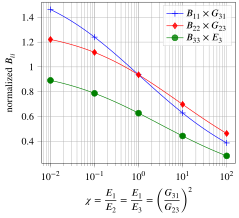
4.5 Application to a circular crack in a monoclinic TraTI matrix
In this section, the monoclinic subspace within TraTI tensors represented by the matrix Eq. 61 is explored. The associated transformation is parametrized by the angle \(\theta\in [0,\pi/2[\) and writes
\[ \wideeq{\uu{P}=\ve{1}\otimes\ve{1}+\ve{2}\otimes\ve{2}+ \left(\cos{\theta}\,\ve{3}+\sin{\theta}\,\ve{1}\right)\otimes\ve{3}} \tag{76}\]
The restriction of the transformation to the plane spanned by \(\ve{1}\) and \(\ve{2}\) acts as identity. By consequence the transformed crack of normal \(\ve{3}\) and characterized by the tensor Eq. 26 is identical to the initial one aligned in the isotropy plane of the TI matrix. A circular crack is considered in the sequel. It follows that \(\eta=\tilde{\eta}=1\), \(a=\tilde{a}\), \(\uv{n}=\ve{3}\) and \(\gamma=\cos{\theta}\) from Eq. 29. The crack opening displacement tensor \(\uu{B}\) in the monoclinic TraTI matrix is given by Eq. 35 in which \(\uu{\tilde{B}}\) of the problem related to the initial TI matrix of stiffness \(\uuuu{\tilde{C}}\) is obtained thanks to the solution of Section 4.1. It follows here that
\[ \wideeq{\uu{B}= \frac{1}{\cos{\theta}}\, \trans{\uu{P}}^{-1}\cdot \uu{\tilde{B}} \cdot\uu{P}^{-1} = B_{11}\,\ve{1}\otimes\ve{1}+ B_{22}\,\ve{2}\otimes\ve{2}+ B_{33}\,\ve{3}\otimes\ve{3}+ B_{13}\,\left(\ve{1}\otimes\ve{3}+\ve{3}\otimes\ve{1}\right)} \tag{77}\]
where the components are
\[ \wideeq{B_{11}=\frac{\tilde{B}_{11}}{\cos{\theta}} =\frac{1}{\cos{\theta}}\, \left( \frac{1}{3\,\eta\,\left((\mathcal{I}_0^\eta-\mathcal{I}_2^\eta)\,\tilde{R}_{2323}^0+ \mathcal{I}_2^\eta\,\tilde{R}_{3131}^0\right)\,\tilde{C}_{2323}^2} \right)} \tag{78}\]
\[ \wideeq{B_{22}=\frac{\tilde{B}_{22}}{\cos{\theta}} =\frac{1}{\cos{\theta}}\, \left( \frac{1}{3\,\eta\,\left((\mathcal{I}_0^\eta-\mathcal{I}_2^\eta)\,\tilde{R}_{3131}^0+ \mathcal{I}_2^\eta\,\tilde{R}_{2323}^0\right)\,\tilde{C}_{2323}^2} \right)} \tag{79}\]
\[ \wideeq{B_{33}=\frac{\tilde{B}_{11}\,\sin^2{\theta}+\tilde{B}_{33}}{\cos^3{\theta}} =\tan^2{\theta}\,B_{11}+\frac{1}{\cos^3{\theta}}\, \left( \frac{4}{3\,\eta\,\mathcal{I}_0^\eta\left( \tilde{R}_{1111}^0\,\tilde{C}_{1133}^2+2\,\tilde{R}_{1133}^0\,\tilde{C}_{1133}\,\tilde{C}_{3333} +\tilde{R}_{3333}^0\,\tilde{C}_{3333}^2 \right)} \right)} \tag{80}\]
\[ \wideeq{B_{13}=-\frac{\tilde{B}_{11}\,\sin{\theta}}{\cos^2{\theta}} =-\tan{\theta}\,B_{11}} \tag{81}\]
According to the definition of \(\uu{B}\) and recalling that the normal is oriented along \(\ve{3}\) here, \(B_{33}\) corresponds to mode I compliance (opening mode) whereas \(B_{11}\) and \(B_{22}\) correspond to mode II (shear modes). It is in addition remarkable that the present configuration offers an analytical expression of a coupling between opening and shear modes through the non-zero value of \(B_{13}\). Such an analytical coupling between modes has been put in evidence in 2D in [56] and recently in 3D in the case of an EO matrix. The present paper extends the set of available matrix symmetries which allow a closed-form solution to the crack opening displacement tensor showing couplings between modes.
Fig. 4 (a) and Fig. 4 (b) present evolutions of components of the crack opening displacement tensor as functions of the inclination \(\theta\) of the monoclinic matrix stiffness corresponding to a given set of initial TI parameters. On the one hand, in Fig. 4 (a), the components are normalized by the axial compliance \(1/\tilde{E}_3\) of the TI material and \(\theta\) is limited to \(\pi/4\) since they diverge when \(\theta\) tends towards \(\pi/2\) due to the fact that the matrix progressively becomes singular when the inclination increases. It is indeed recalled that terms such as \(\cos^k\theta\) appearing in denominators of components \(B_{ij}\) in Eq. 7881 and entailing singularities of \(\uu{B}\) when \(\theta\) approaches \(\pi/2\) are only attributable to the singularity of the matrix behavior (see cancellation of components in Eq. 61 when \(\theta=\pi/2\) for which \(\uuuu{C}\) ceases to be positive definite) whereas the crack always remains circular and orthogonal to \(\ve{3}\). On the other hand, in Fig. 4 (b), the components of \(\uu{B}\) are normalized by adequate compliances \(S_{i3i3}\) of the surrounding monoclinic matrix so that the singularity of \(B_{ij}\) is compensated by that of \(S_{i3i3}\) when \(\theta\) tends towards \(\pi/2\).
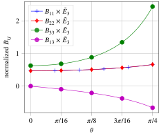
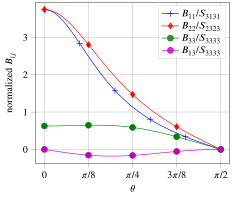
5 Approximation of the crack compliance in an anisotropic matrix
This section is devoted to the exploitation of the analytical derivation of crack compliance in a TraTI matrix in order to estimate the crack compliance in cases which do not allow analytical solution.
5.1 Best-fit problem
An arbitrarily oriented elliptical crack characterized by a second-order tensor \(\uu{A}\) is considered. As in Eq. 3, \(\uv{\ell}\) and \(\uv{m}\) are oriented along the axes and \(\uv{n}\) is a unit normal vector. This crack is embedded in an infinite uniform matrix of stiffness \(\uuuu{C}\) of arbitrary anisotropy. The objective of this section is to present an algorithm providing the stiffness tensor closest to \(\uuuu{C}\) in the sense of Euclidean norm for which there exists an analytical solution to the crack opening displacement tensor. Such analytical solutions are available in case of isotropic matrix ([4], [1]), TI matrix only if the crack is aligned along the isotropy plane ([57], [52]) and configurations deduced from these two ones by linear transformation: EO matrix [41] and TraTI matrix (see Section 4 of the present paper). Observing that the configuration of an arbitrarily oriented crack in an isotropic matrix is a particular case of a crack aligned along the isotropy plane of a TI matrix, it follows that the most general case including all the others is that of a TraTI matrix with a specific restriction: the initial crack must be aligned along the isotropy plane of the TI matrix.
It has been shown in Section 4.2 that a TraTI tensor is characterized by 11 parameters in Eq. 53: 5 moduli of the initial TI tensor (or engineering parameters) and 6 angles defining a practical parametrization of the transformation \(\uu{P}\)Eq. 59. Since the initial TI problem can be defined up to an arbitrary rigid-body motion without loss or generality, it is possible to assume that the axis of the TI matrix is \(\ve{3}\). In addition, \(\ve{3}\) must also coincide with the normal to the crack associated to the tensor \(\uu{\tilde{A}}\) as defined by Eq. 19, which introduces 2 constraints on the TraTI parameters. It comes then that the set of tensors in which the closest representative of \(\uuuu{C}\) shall be searched depends on 9 independent parameters. This is a significant enrichment beyond the set of EO tensors which depends on 7 parameters (4 material parameters and 3 angles) ([55], [39], [41]).
A proper expression of the best-fit problem at stake here requires to specify a relevant parametrization of the eligible transformations \(\uu{P}\), namely such that the initial crack, which transforms into the actual crack, is aligned with the initial isotropy plane of the TI matrix. Since \(\ve{3}\) is chosen as the TI axis and initial crack normal, the isotropy plane is spanned by \(\{\ve{1},\ve{2}\}\). Recalling that the considered transformations must always be invertible, it comes out from the counterparts of Eq. 2627 applied to the inverse transformation \(\uu{P}^{-1}\) that the constraints imposed on \(\uu{P}\) are satisfied if and only if the image of the plane spanned by \(\{\ve{1},\ve{2}\}\) is the plane spanned by \(\{\uv{\ell},\uv{m}\}\) i.e. the axes of the actual crack, or reciprocally the image of the plane spanned by \(\{\uv{\ell},\uv{m}\}\) is the plane spanned by \(\{\ve{1},\ve{2}\}\). In this case \(\ve{1}\) and \(\ve{2}\) are not necessarily aligned with the axes of the initial crack, but the latter belong to the same plane normal to \(\ve{3}\), which is precisely the desired objective. Hence, the following relevant parametrization of \(\uu{P}\) is proposed starting from Eq. 59 but making \(\uu{P}\cdot\ve{1}\) and \(\uu{P}\cdot\ve{2}\) belonging to the actual crack plane
\[ \wideeq{\uu{P}_{\alpha,\beta,\theta,\phi}=\uv{u}\otimes\ve{1}+\uv{v}\otimes\ve{2}+\uv{w}\otimes\ve{3} \quad\textrm{with}\quad \left\{ \begin{array}{rcl} \uv{u}&=&\cos{\alpha}\,\uv{\ell}+\sin{\alpha}\,\uv{m}\\ \uv{v}&=&\cos{\beta}\,\uv{\ell}+\sin{\beta}\,\uv{m}\\ \uv{w}&=&\sin{\theta}\,\left(\cos{\phi}\,\uv{\ell}+\sin{\phi}\,\uv{m}\right)+\cos{\theta}\,\uv{n} \end{array} \right.} \tag{82}\]
This parametrization puts explicitly in evidence the 4 angle parameters \(\alpha,\beta,\theta,\phi\) completing the determination of the set of TraTI tensors consistent with the crack orientation. The configuration defining the biggest set of matrix stiffness with the highest degree of anisotropy allowing an analytical calculation of the crack opening displacement tensor \(\uu{B}\) using the method of the present paper can be summarized by the following framework
- a crack defined by an arbitrary orthonomal frame \((\uv{\ell},\uv{m},\n)\) (i.e. 3 Euler angles), an aspect ratio \(\eta\) and a large radius \(a\) (see crack Eq. 1)
- a matrix stiffness writing \(\uuuu{C}=\sum_{i=1}^5{\tilde{c}_i}\, \uuuu{F}^s_{i}(\ve{3},\uu{P}_{\alpha,\beta,\theta,\phi})\), thus defined by 9 independent parameters: 5 moduli \(\tilde{c}_i\) and 4 angles \(\alpha\), \(\beta\), \(\theta\) and \(\phi\) involved in Eq. 82.
Note that a simple dimensional analysis shows that \(\uu{B}\) does not depend on the radius \(a\). If \(\uuuu{C}\) cannot be decomposed as \(\sum_{i=1}^5{\tilde{c}_i}\, \uuuu{F}^s_{i}(\ve{3},\uu{P}_{\alpha,\beta,\theta,\phi})\), it remains possible to solve the following best-fit problem to approximate \(\uuuu{C}\)
\[ \wideeq{\min_{(\tilde{c}_i)_{1\leq i\leq 5},\alpha,\beta,\theta,\phi} \Bigl\lVert \uuuu{C} - \sum_{i=1}^5{\tilde{c}_i}\, \uuuu{F}^s_{i}(\ve{3},\uu{P}_{\alpha,\beta,\theta,\phi}) \Bigr\rVert \quad\textrm{with}\quad \uuuu{F}^s_{i}(\ve{3},\uu{P})= (\uu{P}\sboxtimes\uu{P}): \uuuu{E}^s_{i}(\ve{3}) :\trans{(\uu{P}\sboxtimes\uu{P})}} \tag{83}\]
which is obviously equivalent to the minimization of the following function
\[ \wideeq{J\left((\tilde{c}_i)_{1\leq i\leq 5},\alpha,\beta,\theta,\phi\right) =\frac{1}{2}\, \Bigl\lVert \uuuu{C} - \sum_{i=1}^5{\tilde{c}_i}\, \uuuu{F}^s_{i}(\ve{3},\uu{P}_{\alpha,\beta,\theta,\phi}) \Bigr\rVert^2} \tag{84}\]
Due to the linearity of the approximated tensor with respect to the \(\tilde{c}_i\) coefficients, the problem Eq. 83 can be simplified thanks to a partial resolution of these coefficients actually corresponding to the conditions \(\partial J/\partial \tilde{c}_i=0\). At fixed angles \(\alpha\), \(\beta\), \(\theta\) and \(\phi\), the optimization of \(\tilde{c}_i\) is indeed obtained by resolution of the linear system in \(\R^5\)
\[ \wideeq{A_{ij}\,\tilde{c}_j=b_i \quad\textrm{with}\quad A_{ij}=\uuuu{F}^s_{i}(\ve{3},\uu{P}_{\alpha,\beta,\theta,\phi}):: \uuuu{F}^s_{j}(\ve{3},\uu{P}_{\alpha,\beta,\theta,\phi}) \quad\textrm{and}\quad b_i=\uuuu{F}^s_{i}(\ve{3},\uu{P}_{\alpha,\beta,\theta,\phi})::\uuuu{C}} \tag{85}\]
where \(::\) denotes the quadruple contraction, namely the scalar product between fourth-order tensors \(\uuuu{A}::\uuuu{B}=A_{ijkl}B_{ijkl}\). The coefficients \(\tilde{c}_i\) become then functions of the angles \(\alpha\), \(\beta\), \(\theta\) and \(\phi\) and the minimization problem Eq. 83 is turned into a new one depending only on these four angles
\[ \wideeq{\min_{\alpha,\beta,\theta,\phi} \Bigl\lVert \uuuu{C} - \sum_{i=1}^5{\tilde{c}_i}(\alpha,\beta,\theta,\phi) \,\uuuu{F}^s_{i}(\ve{3},\uu{P}_{\alpha,\beta,\theta,\phi}) \Bigr\rVert} \tag{86}\]
or equivalently
\[ \wideeq{\min_{\alpha,\beta,\theta,\phi} \bar{J}(\alpha,\beta,\theta,\phi) \quad\textrm{with}\quad \bar{J}(\alpha,\beta,\theta,\phi)= J\left({\tilde{c}_i}(\alpha,\beta,\theta,\phi),\alpha,\beta,\theta,\phi\right)} \tag{87}\]
However \(\bar{J}\) is not convex so the minimization problem Eq. 87 is not easy to handle. The presence of local minima prevents then from reliably applying local gradient-free or gradient-based algorithm. In this case, it may be recommended to use first a global algorithm followed by a local one.
With the aim of using gradient-based algorithms to perform this second step of resolution of the minimization problem Eq. 86, it is worth observing that, due to the stationnarity of \(J\) with respect to \(\tilde{c}_i\), the differentiation of \(\bar{J}\) with respect to any of its four arguments can be simply obtained by the corresponding partial differentiation of \(J\) while keeping \(\tilde{c}_i\) constant. For example,
\[ \wideeq{\frac{\partial \bar{J}}{\partial\alpha}= \frac{\partial J}{\partial\alpha}+ \frac{\partial J}{\partial\tilde{c}_i}\, \frac{\partial \tilde{c}_i}{\partial\alpha} = \frac{\partial J}{\partial\alpha} \quad\textrm{since}\quad \frac{\partial J}{\partial\tilde{c}_i}=0} \tag{88}\]
It follows that
\[ \wideeq{\frac{\partial \bar{J}}{\partial\alpha}= \left( \sum_{j=1}^5{\tilde{c}_j} \,\uuuu{F}^s_{j}(\ve{3},\uu{P}_{\alpha,\beta,\theta,\phi}) -\uuuu{C} \right) :: \left( \sum_{i=1}^5{\tilde{c}_i}\, \frac{\partial}{\partial\alpha} \uuuu{F}^s_{i}(\ve{3},\uu{P}_{\alpha,\beta,\theta,\phi}) \right)} \tag{89}\]
with \(\tilde{c}_i\) resulting from Eq. 85 and
\[ \wideeq{\begin{array}{rcl} \frac{\partial}{\partial\alpha} \uuuu{F}^s_{i}(\ve{3},\uu{P}_{\alpha,\beta,\theta,\phi}) &=& ( \frac{\partial}{\partial\alpha}\uu{P}_{\alpha,\beta,\theta,\phi} \sboxtimes \uu{P}_{\alpha,\beta,\theta,\phi} ): \uuuu{E}^s_{i}(\ve{3}) :\trans{( \uu{P}_{\alpha,\beta,\theta,\phi} \sboxtimes \uu{P}_{\alpha,\beta,\theta,\phi} )} +\\ && ( \uu{P}_{\alpha,\beta,\theta,\phi} \sboxtimes \frac{\partial}{\partial\alpha}\uu{P}_{\alpha,\beta,\theta,\phi} ): \uuuu{E}^s_{i}(\ve{3}) :\trans{( \uu{P}_{\alpha,\beta,\theta,\phi} \sboxtimes \uu{P}_{\alpha,\beta,\theta,\phi} )} +\\ && ( \uu{P}_{\alpha,\beta,\theta,\phi} \sboxtimes \uu{P}_{\alpha,\beta,\theta,\phi} ): \uuuu{E}^s_{i}(\ve{3}) :\trans{( \frac{\partial}{\partial\alpha}\uu{P}_{\alpha,\beta,\theta,\phi} \sboxtimes \uu{P}_{\alpha,\beta,\theta,\phi} )} +\\ && ( \uu{P}_{\alpha,\beta,\theta,\phi} \sboxtimes \uu{P}_{\alpha,\beta,\theta,\phi} ): \uuuu{E}^s_{i}(\ve{3}) :\trans{( \uu{P}_{\alpha,\beta,\theta,\phi} \sboxtimes \frac{\partial}{\partial\alpha}\uu{P}_{\alpha,\beta,\theta,\phi} )} \end{array}} \tag{90}\]
in which the derivative of the transformation is simply calculated from Eq. 82. For example the derivative with respect to \(\alpha\) gives
\[ \wideeq{\frac{\partial}{\partial\alpha}\uu{P}_{\alpha,\beta,\theta,\phi}= \left(-\sin{\alpha}\,\uv{\ell}+\cos{\alpha}\,\uv{m}\right)\otimes\ve{1}} \tag{91}\]
The derivatives Eq. 88, Eq. 89, Eq. 90 and Eq. 91 with respect to \(\beta\), \(\theta\) and \(\psi\) are straightforwardly obtained from an analogous reasoning with
\[ \wideeq{\frac{\partial}{\partial\beta}\uu{P}_{\alpha,\beta,\theta,\phi}= \left(-\sin{\beta}\,\uv{\ell}+\cos{\beta}\,\uv{m}\right)\otimes\ve{2}} \tag{92}\]
\[ \wideeq{\frac{\partial}{\partial\theta}\uu{P}_{\alpha,\beta,\theta,\phi}= \left[ \cos{\theta}\,\left(\cos{\phi}\,\uv{\ell}+\sin{\phi}\,\uv{m}\right)-\sin{\theta}\,\uv{n} \right] \otimes\ve{3}} \tag{93}\]
\[ \wideeq{\frac{\partial}{\partial\phi}\uu{P}_{\alpha,\beta,\theta,\phi}= \sin{\theta}\,\left(-\sin{\phi}\,\uv{\ell}+\cos{\phi}\,\uv{m}\right) \otimes\ve{3}} \tag{94}\]
Practically, the examples developed in Section 5.2 are implemented in the Julia language [58] and the minimization problem Eq. 87 is solved by means of the meta-package GalacticOptim.jl1 calling successively two algorithms of the Optim.jl package [59]: first a simulated annealing method reaching a temporary approximative solution followed by a limited memory BFGS algorithm (called L-BFGS in Optim.jl). In addition, these packages allow the use of automatic differentiation algorithms as detailed in [60] and implemented in ForwardDiff.jl2. Such algorithms take advantage of the efficiency of the Julia language to compute numerically the exact gradient of the objective function without resorting to the analytical expression Eq. 89.
5.2 Application to real materials
It is proposed in this section to compare several methods to calculate the crack opening displacement tensor for a penny-shaped crack embedded in a TI matrix for a varying angle \(\varpi\) between the normal crack and the axis of the matrix (see Fig. 5). Two cases of TI matrix are considered: wet bovine dentin from [28] and cortical bone from [26]. The matrix parameters are recalled in Table 1 (note that the moduli of cortical bone are deduced from Young’s moduli and Poisson’s ratios actually provided in [26]).
| \(C_{1111}\) | \(C_{1122}\) | \(C_{1133}\) | \(C_{3333}\) | \(C_{2323}\) | |
|---|---|---|---|---|---|
| wet bovine dentin | 37.00 | 16.60 | 8.70 | 39.00 | 5.70 |
| cortical bone | 20.89 | 11.16 | 10.90 | 31.12 | 5.78 |
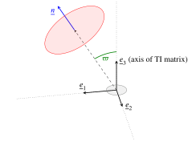
Before detailing the approximated calculations of \(\uu{B}(\varpi)\), it is worth recalling that the exact numerical calculation, considered as the reference, can be carried out through \(\uuuu{H}\) following either the algorithm presented in [16] based on an application of Cauchy’s residue theorem to obtain a quasi-analytical expression of \(\uuuu{R}(\phi)\) in Eq. 10 and a numerical integration for \(\uuuu{P}^1\) or alternatively the method presented in [61] based on a two-dimensional numerical integration for \(\uuuu{P}^1\) thanks to the efficient cubature algorithm proposed in [62]. The former method is rather fast (about 0.01 s to compute \(\uu{B}\) with a C++ program on an Intel® Core™ i7-10510U CPU @ 1.80 GHz 2.30 GHz) but may be inaccurate when the crack is close to symmetry planes due to close poles in the residue theorem. On the contrary the latter method based on the two-dimensional cubature is less fast (between 0.02 and 0.03 s for the same computation) but is more robust since it can be applied whatever the matrix anisotropy and crack orientation. This exact calculation of \(\uu{B}\) considered as the reference one plotted in blue in Fig. 6, Fig. 7, Fig. 8 and Fig. 9, is compared to several approximation calculations based on a rigorous analytical calculation of \(\uu{B}\) for a crack embedded in a fictitious matrix of approximated stiffness (allowing analytical derivation of \(\uu{B}\)) obtained by best-fit procedure
\(\uu{B}^\mathrm{ETI}\) in an approximated elliptic transversely isotropic (ETI) matrix (in red in Fig. 6, Fig. 7, Fig. 8 and Fig. 9)
The complete procedure to build this tensor is provided in [28]. The idea following the conclusions of [26] and [27] consists in building the analytical \(\uu{B}\) tensor for a crack aligned in the plane of the ETI matrix (see Section 4.1) closest to the real matrix in terms of Euclidean distance on stiffness and considering this tensor as constant for any angle between the crack and the matrix axis. The crack compliance contribution tensor \(\uuuu{H}\) still depends on the crack orientation through \(\uv{n}\) in Eq. 7. Note that the ETI stiffness considered in [28] referring to the definition given in [63] is different from the EO symmetry defined in Eq. 68. Indeed, the stiffness of Eq. 68 depends quadratically on a second-order definite positive symmetric tensor \(\uu{D}\) whereas the ETI tensor of [63] and [28] depends linearly on a second-order definite positive symmetric tensor \(\omega\) and 4 parameters \(\lambda_1\), \(\mu_1\), \(\lambda_2\) an \(\mu_2\) as
\[ \wideeq{\uuuu{C}^\mathrm{ETI} =\lambda_1\,\uu{1}\otimes\uu{1}+2\,\mu_1\,\uu{1}\sboxtimes\uu{1} + \lambda_2\,\left(\uu{1}\otimes\uu{\omega}+\uu{\omega}\otimes\uu{1}\right) +2\,\mu_2\,\left(\uu{1}\sboxtimes\uu{\omega}+\uu{\omega}\sboxtimes\uu{1}\right)} \tag{95}\]
It is worth noting that \(\uuuu{C}^\mathrm{ETI}\) in Eq. 95 writes as the sum of an isotropic tensor and a contribution which can be interpreted as a the first-order deviation from isotropy in a Taylor expansion of an EO tensor such as Eq. 68 in which \(\uu{D}-\uu{1}\) would be infinitely small. However, the set of tensors of type Eq. 68 is defined with arbitrary, not necessarily small, second-order definite positive symmetric tensors \(\uu{\omega}\) and is not contained in the set of EO tensors as Eq. 68 nor contains it.
\(\uu{B}^\mathrm{TI}\) constant in the real TI matrix (in cyan in Fig. 6, Fig. 7, Fig. 8 and Fig. 9)
This approximation consists in calculating analytically \(\uu{B}\) for the case of a crack aligned in the real TI matrix (see Section 4.1) and considering it as constant for any crack orientation.
\(\uu{B}^\mathrm{EO}\) in an approximated EO matrix (in purple in Fig. 6, Fig. 7, Fig. 8 and Fig. 9)
This approximation relies first on the search for the closest EO stiffness in the sense of the algorithm presented in [39]. Then \(\uu{B}^\mathrm{EO}\) is calculated as the opening displacement tensor of the crack embedded in this EO matrix thanks to the analytical approach proposed in [41]. Unlike \(\uu{B}^\mathrm{ETI}\) and \(\uu{B}^\mathrm{TI}\) which are kept independent of the crack orientation \(\uv{n}\), \(\uu{B}^\mathrm{EO}\) actually depends on \(\uv{n}\) by construction in [41].
\(\uu{B}^\mathrm{TraTI}\) in an approximated TraTI matrix (in green in Fig. 6, Fig. 7, Fig. 8 and Fig. 9)
This tensor stems from the procedure detailed in the present paper which relies on the approximation of the matrix stiffness by a TraTI constrained by the crack orientation, namely such that the associated TI matrix and transformed crack are aligned (see Section 5.1), and then on the calculation of \(\uu{B}\) as described in Section 4.3.
Fig. 6 (resp. Fig. 8) present the evolution of the non-zero components of all \(\uu{B}\) tensors against the angle between the crack normal and the axis of the real matrix for the wet bovine dentin (resp. cortical bone). Fig. 7 (resp. Fig. 9) show the normalized distance between the approximated and exact \(\uu{B}\) tensors and the normalized distance between the approximated and real stiffness tensors. As expected due to the fact that it is the richest set of stiffness, the TraTI approximations are globally the best ones. However, Fig. 7 (a) and Fig. 9 (a) show that for some orientations, the other estimates may be slightly better even for angles such that the TraTI stiffness approximation \(\uuuu{C}^\mathrm{TraTI}\) is the closest to the real stiffness (see Fig. 7 (b) and Fig. 9 (b)). For instance, by construction, \(\uuuu{C}^\mathrm{TraTI}\) is always closer to the real stiffness than \(\uuuu{C}^\mathrm{EO}\) since the set of EO tensors is included in the set of TraTI ones but there exist some orientations for which \(\uu{B}^\mathrm{EO}\) slightly better approximates \(\uu{B}\) than \(\uu{B}^\mathrm{TraTI}\) does. The difference is very small but still enough to prevent from stating that a closer stiffness (or compliance) approximation would lead to a closer \(\uu{B}\) tensor.
Beside previous remarks about overall proximity between approximated and exact \(\uu{B}\) and \(\uuuu{C}\) tensors, the trends of curves in Fig. 6, Fig. 7, Fig. 8 and Fig. 9 deserve to be commented. First it can be observed in Fig. 7 (b) and Fig. 9 (b) that the best TraTI \(\uuuu{C}\) consistent with the crack orientation (parametrized by the angle \(\varpi\)) strongly depends on \(\varpi\) with a non-monotonic error when \(\varpi\) varies from \(0\) to \(\pi/2\). Although surprising at first glance, this trend is not so unexpected since the function to be minimized in Eq. 87 can itself show many local minima which are very difficult to anticipate but which can be identified indifferently by several global algorithms. In fact this function depends a lot on the anisotropy of the initial tensor \(\uuuu{C}\) and it is recalled that the approximation by a TraTI stiffness is constrained by the orientation of the crack relatively to the symmetries of \(\uuuu{C}\), which increases the complexity of the dependence of the approximation error with \(\varpi\). It can in addition be noticed that the non-monotonic characteristic of the trend is more stressed in Fig. 7 (b) than Fig. 9 (b), which is consistent with the fact that the error of approximation reaches higher levels for the wet bovine dentin case than for the cortical bone one meaning that the latter is less anisotropic than the former and probably offers less possibilities of finding local minima. The evolutions with \(\varpi\) of the error committed by approximating \(\uu{B}\) in Fig. 7 (a) and Fig. 9 (a) are rather consistent with their counterparts on \(\uuuu{C}\) in terms of non-monotonic trends with less fluctuations in the case of cortical bone maybe again in consistency with the lower degree of anisotropy. The same arguments based on the complexity of the minimization problem Eq. 87 and the dependence on the relative orientations of the crack and the matrix symmetries can somehow also bring an explanation concerning the oscillations observed in Fig. 6.
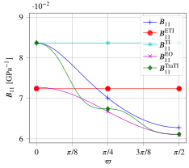
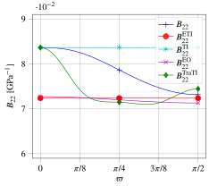
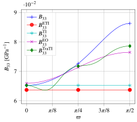
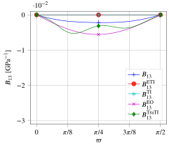
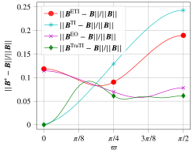
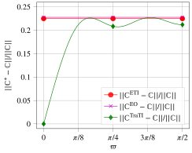
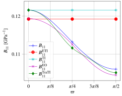
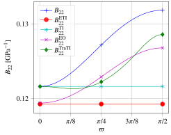
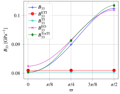
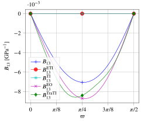
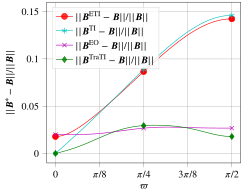
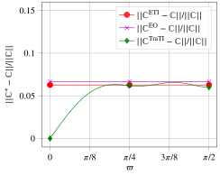
6 Concluding remarks
After recalling some generalities about the quantification of the compliance generated by the presence of an elliptical crack in an infinite anisotropic matrix, focusing in particular on the link between the second-order opening displacement tensor \(\uu{B}\) and the compliance contribution tensor \(\uuuu{H}\), it has been shown in this study that the use of a linear transformation can help to relate \(\uu{B}\) tensors of associated problems. The idea is to extend the scope of available anisotropies for which analytical constructions of \(\uu{B}\) and \(\uuuu{H}\) (i.e. without resorting to any quadrature algorithm) are available beyond the set of already published results.
The application of the methodology relying on the transformation of a matrix configuration for which an analytical expression of \(\uu{B}\) is reachable has led to an examination of the case of a transformed transversely isotropic (TraTI) matrix characterized by 11 parameters. Indeed, as the compliance of an elliptical crack aligned in a TI matrix is known, it has become possible to calculate the \(\uu{B}\) tensor in a TraTI matrix under the restriction that the back-transformed configuration should involve a crack aligned with the original TI matrix. This constraint implies that the subset of TraTI matrix anisotropy for which the \(\uu{B}\) tensor is analytically calculable depends on 9 parameters. This set does not cover all the orthotropic tensors but extends the scope of analytical results for new particular cases of orthotropy in 3D. Moreover, this set also contains some monoclinic tensors, which gives access to the first analytical construction of a \(\uu{B}\) tensor in a matrix without orthogonal symmetry planes.
A last section has been devoted to the best-fit problem with respect to the subset of TraTI materials which are consistent with the crack orientation in the sense defined previously. Given a crack orientation, the objective is to approximate an arbitrary matrix stiffness by a TraTI one in which the \(\uu{B}\) tensor related to the crack is analytically calculable. In the case of a TI matrix with rotated crack, this \(\uu{B}\) tensor is compared to a numerical exact calculation and to \(\uu{B}\) tensors provided by other approximation methods: either from a best-fit of the matrix stiffness in the space of EO tensors or \(\uu{B}\) tensors corresponding to an aligned crack with the isotropy plane of the initial TI matrix or of an approximated ETI matrix. The findings of this study show that, although providing generally better estimates of \(\uu{B}\), the calculation based on a TraTI approximated stiffness can sometimes be slightly worse than the other ones. In particular, it is interesting to notice that, for certain angles, \(\uu{B}\) obtained from the EO stiffness can be closer to the exact tensor than \(\uu{B}\) obtained from the TraTI stiffness. In this case, the difference between approximations is tiny but yet actual although the TraTI stiffness obviously always better estimates the initial TI stiffness since the EO tensors belong to the set of TraTI ones. However, the advantage of the EO approximation of the stiffness is that the best-fit problem is not constrained by the crack orientation and thus can be used with arbitrary crack orientations. This allows to easily implement homogenization schemes (dilute, Non-Interacting Approximation, Mori-Tanaka-Benveniste, Maxwell, …) with arbitrary distributions of crack orientations.
Acknowledgements
This work, started in collaboration with our late friend Professor Igor Sevostianov, is dedicated to his memory. His vast knowledge, the acuity of his reasoning and his scientific writing, his precious advice during our joint work and above all his friendly presence are sorely missed. May our great friend rest in peace after leaving us such a rich and inspiring legacy.
Appendices
7 Tensor algebra and Walpole basis
The convention adopted here for double-dot product (see [54] for more precisions about this point) is such that
\[ \wideeq{\uu{a}:\uu{b}=a_{ij}b_{ij} \quad\textrm{and}\quad \uuuu{T}:\uu{a}=T_{ijkl}a_{kl}\ve{i}\otimes\ve{j}} \tag{96}\]
where the Einstein notation of repeated indices is used and \(\otimes\) denotes the classical tensor product. This means that the double-dot product does not apply successively to the closest indices but somehow to the couple of the two last indices of the tensor to the left with the couple of the two first indices of the tensor to the right. It follows that the components of the transpose tensor \(\trans{\uuuu{T}}\) such that \(\trans{\uuuu{T}}:\uu{a}=\uu{a}:\uuuu{T}\) write \(\left(\trans{\uuuu{T}}\right)_{ijkl}=T_{klij}\).
The notation \(\sotimes\) indicates a tensor product followed by a symmetrization over the last index of the tensor to the left of the product and the first index of the tensor to the right. For instance, if \(\uv{u}\) and \(\uv{v}\) are first-order tensors (i.e. vectors)
\[ \wideeq{\uv{u}\sotimes\uv{v}=\frac{\uv{u}\otimes\uv{v}+\uv{v}\otimes\uv{u}}{2}} \tag{97}\]
This tensor product can of course be generalized to combinations involving higher order tensors as for instance
\[ \wideeq{\uv{u}\sotimes\uu{a}\sotimes\uv{v}= \frac{u_i\,a_{jk}\,v_l+u_i\,a_{jl}\,v_k+u_j\,a_{ik}\,v_l+u_j\,a_{il}\,v_k}{4} \,\ve{i}\otimes\ve{j}\otimes\ve{k}\otimes\ve{l}} \tag{98}\]
The fourth-order tensor \(\uu{a}\boxtimes\uu{b}\) (where \(\uu{a}\) and \(\uu{b}\) are two second-order tensors) introduced in [54] is defined by its operation over any second-order tensor \(\uu{p}\) and by its components
\[ \wideeq{(\uu{a}\boxtimes\uu{b}):\uu{p}=\uu{a}\cdot\uu{p}\cdot\trans{\uu{b}} =a_{ik}p_{kl}b_{jl}\ve{i}\otimes\ve{j} \quad\Leftrightarrow\quad \left(\uu{a}\boxtimes\uu{b}\right)_{ijkl}=a_{ik}b_{jl}} \tag{99}\]
A symmetrized version of \(\boxtimes\) denoted by \(\sboxtimes\) can also be introduced. It operates as
\[ \wideeq{(\uu{a}\sboxtimes\uu{b}):\uu{p}= (\uu{a}\boxtimes\uu{b}):\left(\frac{\uu{p}+\trans{\uu{p}}}{2}\right) =\uu{a}\cdot\left(\frac{\uu{p}+\trans{\uu{p}}}{2}\right)\cdot\trans{\uu{b}} \quad\Leftrightarrow\quad (\uu{a}\sboxtimes\uu{b})_{ijkl}=\frac{a_{ik}b_{jl}+a_{il}b_{jk}}{2}} \tag{100}\]
It follows from these definitions that the fourth-order identity, as an operator over second-order tensors, writes \(\uuuu{1}=\uu{1}\boxtimes\uu{1}\) where \(\uu{1}\) is the second-order identity. The fourth-order operator allowing to extract the symmetric part of a second-order tensor writes \(\uuuu{I}=\uu{1}\sboxtimes\uu{1}\). The latter tensor, which obviously complies with the conditions of minor symmetries, is classically used to play the role of fourth-order identity operating over symmetric second-order tensors.
The Walpole basis [64] allowing to write any fourth-order transversely isotropic relatively to an axis oriented by the unit vector \(\n\) is composed of the six following tensors
\[ \wideeq{\begin{aligned} \uuuu{E}_1(\n)=\uu{p}(\n)\otimes\uu{p}(\n) \quad\textrm{ ; }\quad \uuuu{E}_2(\n)=\frac{\uu{q}(\n)\otimes\uu{q}(\n)}{2} &\textrm{ ; }& \uuuu{E}_3(\n)=\frac{\uu{p}(\n)\otimes\uu{q}(\n)}{\sqrt{2}} \quad\textrm{ ; }\quad \uuuu{E}_4(\n)=\frac{\uu{q}(\n)\otimes\uu{p}(\n)}{\sqrt{2}}\\ \uuuu{E}_5(\n)=\uu{q}(\n)\sboxtimes\uu{q}(\n)-\frac{\uu{q}(\n)\otimes\uu{q}(\n)}{2} &\textrm{ ; }& \uuuu{E}_6(\n)=\uu{q}(\n)\sboxtimes\uu{p}(\n)+\uu{p}(\n)\sboxtimes\uu{q}(\n) \end{aligned}} \tag{101}\]
built from the second-order projectors associated to \(\n\)
\[ \wideeq{\uu{p}(\n)=\n\otimes\n \quad\textrm{and}\quad \uu{q}(\n)=\uu{1}-\uu{p}(\n) =\uv{\ell}\otimes\uv{\ell}+\uv{m}\otimes\uv{m}} \tag{102}\]
where \((\uv{\ell},\uv{m})\) can be any couple of orthonormal vectors both normal to \(\n\). Any transversely isotropic fourth-order tensor of axis \(\n\) can be decomposed as
\[ \wideeq{\uuuu{T} = \sum_{i=1}^6{t_i}\,\uuuu{E}_{i}(\n)} \tag{103}\]
Providing that the direction \(\n\) is unambiguously previously defined, the six parameters can be conveniently gathered in a triplet composed of a \(2\times 2\) matrix containing the four first parameters \(t_i\) (\(1\leq i \leq 4\)) and the two last parameters \(t_5\) and \(t_6\)
\[ \wideeq{\uuuu{T} \equiv \left( T , t_5 , t_6 \right)_{(\n)} \textrm{ with } T = \left( \begin{array}{cc} t_1 & t_3 \\ t_4 & t_2 \\ \end{array} \right)} \tag{104}\]
Such a synthetic notation allows simple calculations of products and inverses of transversely isotropic tensors of same axis which consist in classical matrix or scalar products and inverses
\[ \wideeq{\uuuu{T} : \uuuu{U} \equiv \left( T U , t_5 u_5 , t_6 u_6 \right)_{(\n)} \quad\textrm{and}\quad \uuuu{T}^{-1} \equiv \left( T^{-1} , \frac{1}{t_5} , \frac{1}{t_6} \right)_{(\n)}} \tag{105}\]
In addition it is also possible to introduce the symmetric Walpole basis associated to the axis directed by \(\n\) composed of the five following tensors
\[ \wideeq{\begin{aligned} \uuuu{E}_1^s(\n)=\uu{p}(\n)\otimes\uu{p}(\n) \quad\textrm{ ; }\quad \uuuu{E}_2^s(\n)=\frac{\uu{q}(\n)\otimes\uu{q}(\n)}{2} &\textrm{ ; }& \uuuu{E}_3^s(\n)=\frac{\uu{p}(\n)\otimes\uu{q}(\n)}{\sqrt{2}}+ \frac{\uu{q}(\n)\otimes\uu{p}(\n)}{\sqrt{2}}\\ \uuuu{E}_4^s(\n)=\uu{q}(\n)\sboxtimes\uu{q}(\n)- \frac{\uu{q}(\n)\otimes\uu{q}(\n)}{2} &\textrm{ ; }& \uuuu{E}_5^s(\n)=\uu{q}(\n)\sboxtimes\uu{p}(\n)+\uu{p}(\n)\sboxtimes\uu{q}(\n) \end{aligned}} \tag{106}\]
such that any symmetric transversely isotropic fourth-order tensor can be decomposed and condensely written as
\[ \wideeq{\uuuu{T} = \sum_{i=1}^5{t_i}\uuuu{E}^s_{i}(\n) \equiv \left( T , t_4 , t_5 \right)_{(\n)} \textrm{ with } T = \left( \begin{array}{cc} t_1 & t_3 \\ t_3 & t_2 \\ \end{array} \right)} \tag{107}\]
Alternatively if the axis of the symmetric transversely isotropic tensor is taken as \(\ve{3}\), the Walpole components can also be written from the five independent components in the canonical basis \(T_{1111}\), \(T_{1122}\), \(T_{1133}\), \(T_{3333}\) and \(T_{2323}\) as
\[ \wideeq{\uuuu{T}= T_{3333}\,\uuuu{E}^s_{1}(\ve{3}) + (T_{1111}+T_{1122})\,\uuuu{E}^s_{2}(\ve{3}) + \sqrt{2}T_{1133}\,\uuuu{E}^s_{3}(\ve{3}) + (T_{1111}-T_{1122})\,\uuuu{E}^s_{4}(\ve{3}) + 2 T_{2323}\,\uuuu{E}^s_{5}(\ve{3})} \tag{108}\]
so that
\[ \wideeq{t_1=T_{3333} \quad\textrm{;}\quad t_2=T_{1111}+T_{1122} \quad\textrm{;}\quad t_3=\sqrt{2}T_{1133} \quad\textrm{;}\quad t_4=T_{1111}-T_{1122} \quad\textrm{;}\quad t_5=2 T_{2323}} \tag{109}\]
and by inversion
\[ \wideeq{T_{1111}=\frac{t_2+t_4}{2} \quad\textrm{;}\quad T_{1122}=\frac{t_2-t_4}{2} \quad\textrm{;}\quad T_{1133}=\frac{t_3}{\sqrt{2}} \quad\textrm{;}\quad T_{3333}=t_1 \quad\textrm{;}\quad T_{2323}=\frac{t_5}{2}} \tag{110}\]
8 Kelvin-Mandel convention
The Kelvin-Mandel convention simplifies the matrix writing of symmetric second-order tensors and fourth-order tensors showing minor symmetries.
Given an orthonormal frame \((\ve{i})_{i=1,2,3}\), the Kelvin-Mandel convention allows to establish a bijection between the second-order tensors and vectors of \(\R^6\) such that
\[ \wideeq{\Mat(\eps,(\ve{i})_{i=1,2,3})= \left( \begin{array}{ccc} \varepsilon_{11} & \varepsilon_{12} & \varepsilon_{31}\\ \varepsilon_{12} & \varepsilon_{22} & \varepsilon_{23}\\ \varepsilon_{31} & \varepsilon_{23} & \varepsilon_{33} \end{array} \right) \mapsto \left( \begin{array}{c} \varepsilon_{11} \\ \varepsilon_{22} \\ \varepsilon_{33} \\ \sqrt{2}\,\varepsilon_{23} \\ \sqrt{2}\,\varepsilon_{31} \\ \sqrt{2}\,\varepsilon_{12} \end{array} \right)} \tag{111}\]
In the present paper, it is often made reference to the crack frame \((\uv{\ell},\uv{m},\uv{n})\) so that Eq. 111 can apply by simple correspondance \(\ve{1}\leftrightarrow\uv{\ell}\), \(\ve{2}\leftrightarrow\uv{m}\) and \(\ve{3}\leftrightarrow\uv{n}\). The basis of symmetric second-order tensors consistent with the decomposition in \(\R^6\) ordered as in Eq. 111 writes then
\[ \wideeq{\mathcal{B}=\left( \uv{\ell}\otimes\uv{\ell}, \uv{m}\otimes\uv{m}, \uv{n}\otimes\uv{n}, \sqrt{2}\,\uv{m}\sotimes\uv{n}, \sqrt{2}\,\uv{n}\sotimes\uv{\ell}, \sqrt{2}\,\uv{\ell}\sotimes\uv{m} \right)} \tag{112}\]
A fourth-order tensor \(\uuuu{C}\) with minor symmetries (\(C_{ijkl}=C_{jikl}=C_{ijlk}\)) may simply be considered as a linear operator acting over the space of symmetric second-order tensors and may be represented as a \(6\times 6\) square matrix in the basis Eq. 112
\[ \wideeq{\Mat(\uuuu{C},\mathcal{B})= \left( \begin{array}{cc|c|cc|c} C_{1111} & C_{1122} & C_{1133} & \sqrt{2}\,C_{1123} & \sqrt{2}\,C_{1131} & \sqrt{2}\,C_{1112} \\ C_{2211} & C_{2222} & C_{2233} & \sqrt{2}\,C_{2223} & \sqrt{2}\,C_{2231} & \sqrt{2}\,C_{2212} \\ \hline C_{3311} & C_{3322} & C_{3333} & \sqrt{2}\,C_{3323} & \sqrt{2}\,C_{3331} & \sqrt{2}\,C_{3312} \\ \hline \sqrt{2}\,C_{2311} & \sqrt{2}\,C_{2322} & \sqrt{2}\,C_{2333} & 2\,C_{2323} & 2\,C_{2331} & 2\,C_{2312} \\ \sqrt{2}\,C_{3111} & \sqrt{2}\,C_{3122} & \sqrt{2}\,C_{3133} & 2\,C_{3123} & 2\,C_{3131} & 2\,C_{3112} \\ \hline \sqrt{2}\,C_{1211} & \sqrt{2}\,C_{1222} & \sqrt{2}\,C_{1233} & 2\,C_{1223} & 2\,C_{1231} & 2\,C_{1212} \end{array} \right)} \tag{113}\]
The result of \(\uuuu{C}:\eps\) becomes then a simple matrix-vector product of Eq. 113 by Eq. 111. Note that the solid lines in Eq. 113 separate blocks affected by different factors \(1\), \(\sqrt{2}\) or \(2\) whereas the dashed lines allow to put in evidence blocks corresponding to in-plane and out-of-planes components (the latter involving \(\uv{n}\) and the former not). Indeed, for semantic and calculation purposes, it is interesting to reorder \(\mathcal{B}\) as
\[ \wideeq{\mathcal{B}^*=\Bigg( \underbrace{\uv{\ell}\otimes\uv{\ell}, \uv{m}\otimes\uv{m}, \sqrt{2}\,\uv{\ell}\sotimes\uv{m}}_{\textrm{in-plane}}, \quad \underbrace{\uv{n}\otimes\uv{n}, \sqrt{2}\,\uv{m}\sotimes\uv{n}, \sqrt{2}\,\uv{n}\sotimes\uv{\ell}}_{\textrm{out-of-plane}} \Bigg)} \tag{114}\]
By adequate permutations of lines and columns of Eq. 113, the matrix of \(\uuuu{C}\) in \(\mathcal{B}^*\) becomes
\[ \wideeq{\Mat(\uuuu{C},\mathcal{B}^*)= \left( \begin{array}{ccc|ccc} C_{1111} & C_{1122} & \sqrt{2}\,C_{1112} & C_{1133} & \sqrt{2}\,C_{1123} & \sqrt{2}\,C_{1131} \\ C_{2211} & C_{2222} & \sqrt{2}\,C_{2212} & C_{2233} & \sqrt{2}\,C_{2223} & \sqrt{2}\,C_{2231} \\ \sqrt{2}\,C_{1211} & \sqrt{2}\,C_{1222} & 2\,C_{1212} & \sqrt{2}\,C_{1233} & 2\,C_{1223} & 2\,C_{1231} \\ \hline C_{3311} & C_{3322} & \sqrt{2}\,C_{3312} & C_{3333} & \sqrt{2}\,C_{3323} & \sqrt{2}\,C_{3331} \\ \sqrt{2}\,C_{2311} & \sqrt{2}\,C_{2322} & 2\,C_{2312} & \sqrt{2}\,C_{2333} & 2\,C_{2323} & 2\,C_{2331} \\ \sqrt{2}\,C_{3111} & \sqrt{2}\,C_{3122} & 2\,C_{3112} & \sqrt{2}\,C_{3133} & 2\,C_{3123} & 2\,C_{3131} \end{array} \right)} \tag{115}\]
The bottom right \(3\times 3\) block of Eq. 115 is exactly the block between dashed lines in Eq. 113.
9 Calculation of \(\uuuu{R}(\phi)\) when \(\uuuu{C}\) is transversely isotropic
By consistency with Section 4.1, the axis of the transversely isotropic matrix aligned with the normal of the crack is chosen here as \(\ve{3}\).
\(\uuuu{R}(\phi)\) tensor is defined in Eq. 10 as the integral involving the operator \(\uuuu{\Gamma}\) given in Eq. 8
\[ \wideeq{\uuuu{R}(\phi)=- \frac{1}{2\,\pi} \int_{t=-\infty}^{+\infty} \left( \uuuu{\Gamma}(\cos{\phi}\,\ve{1}+\sin{\phi}\,\ve{2}+t\,\ve{3})+ \uuuu{\Gamma}(\cos{\phi}\,\ve{1}+\sin{\phi}\,\ve{2}-t\,\ve{3}) -2\,\uuuu{\Gamma}(\ve{3})\right) \ud t} \tag{116}\]
To simplify the writing of the dependence of \(\uuuu{R}(\phi)\) in Eq. 10 with respect to the variable \(\phi\), it is useful to introduce the second-order rotation tensor \(\uu{R}_{\phi,3}\) of angle \(\phi\) around \(\ve{3}\) such that
\[ \wideeq{\Mat(\uu{R}_{\phi,3},(\ve{i})_{i=1,2,3})= \left( \begin{array}{ccc} \cos{\phi}&-\sin{\phi}&0\\ \sin{\phi}&\cos{\phi}&0\\ 0&0&1 \end{array} \right)} \tag{117}\]
As \(\uuuu{C}\) is assumed to be TI of axis \(\ve{3}\) in this section (i.e. can be decomposed as in Eq. 36), the invariance of \(\uuuu{C}\) by rotation around \(\ve{3}\) allows to write \(\uuuu{R}(\phi)\) itself as a rotation of \(\uuuu{R}(0)\). This rotation of angle \(\phi\) around \(\ve{3}\) of a fourth-order tensor satisfying minor symmetries is given by (see tensor notations and conventions in Section 7) 3
\[ \wideeq{\uuuu{R}(\phi)= (\uu{R}_{\phi,3}\sboxtimes\uu{R}_{\phi,3}): \uuuu{R}(0): \trans{(\uu{R}_{\phi,3}\sboxtimes\uu{R}_{\phi,3})}} \tag{118}\]
A practical strategy to derive \(\uuuu{R}(0)\) from a transversely isotropic \(\uuuu{C}\) is detailed in Appendix C of [16]. The calculation is based on the application of the Cauchy residue theorem and boils down to the following expressions of the non-zero components (and associated ones resulting from major and minor symmetries)
\[ \wideeq{R_{1111}^0=-\frac{1}{\sigma_\gamma}\, \dep{\frac{1}{C_{2323}}+\frac{1}{\sqrt{C_{1111}\,C_{3333}}}}} \tag{119}\]
\[ \wideeq{R_{1133}^0=\frac{1}{\sigma_\gamma}\, \frac{C_{1133}+C_{2323}}{C_{2323}\,C_{3333}}} \tag{120}\]
\[ \wideeq{R_{3333}^0=-\frac{1}{\sigma_\gamma}\, \dep{\sqrt{\frac{C_{1111}}{C_{3333}}} -\frac{C_{1133}\,(C_{1133}+2\,C_{2323})}{C_{2323}\,C_{3333}}} \,\frac{1}{C_{3333}}} \tag{121}\]
\[ \wideeq{R_{2323}^0=\frac{1}{4\sqrt{2}}\, \sqrt{\frac{C_{1111}-C_{1122}}{C_{2323}^3}}} \tag{122}\]
\[ \wideeq{R_{3131}^0=\frac{1}{4\,\sigma_\gamma}\, \frac{C_{1111}\,C_{3333}-C_{1133}^2}{C_{2323}^2\,C_{3333}}} \tag{123}\]
\[ \wideeq{R_{1212}^0=-\frac{1}{2\sqrt{2}}\, \frac{1}{\sqrt{C_{2323}\,(C_{1111}-C_{1122})}}} \tag{124}\]
where \(\sigma_\gamma\) is the sum of the square roots \(\gamma_1\) and \(\gamma_2\) (of positive real parts) of the roots of the polynomial equation
\[ \wideeq{P(Z)= Z^2 -\frac{C_{1111}\,C_{3333}-C_{1133}^2-2\,C_{1133}\,C_{2323}} {C_{2323}\,C_{3333}}\, Z +\frac{C_{1111}}{C_{3333}} =0} \tag{125}\]
i.e. \(P(\gamma_1^2)=P(\gamma_2^2)=0\) so that
\[ \wideeq{\sigma_\gamma= \gamma_1+\gamma_2=\sqrt{\gamma_1^2+\gamma_2^2+2\,\gamma_1\,\gamma_2} =\sqrt{ \frac{C_{1111}\,C_{3333}-C_{1133}^2-2\,C_{1133}\,C_{2323}} {C_{2323}\,C_{3333}} +2\sqrt{\frac{C_{1111}}{C_{3333}}}}} \tag{126}\]
Besides \(\uuuu{R}(\phi)\) is supposed to take part of an integration over \(\phi\) in Eq. 10 which is expected to result in an orthotropic tensor \(\uuuu{P}^1\) due to the symmetries of the problem. Consequently the relevant components (and associated ones by major and minor symmetries) of \(\uuuu{R}(\phi)\), namely leading to non-zero components of \(\uuuu{P}^1\), can be written as functions of \(\cos{\phi}\) and components \(R_{ijkl}^0\) of \(\uuuu{R}(0)\) as
\[ \wideeq{R_{1111}(\phi)=\cos^4{\phi}\,R_{1111}^0 +4\,\cos^2{\phi}\,(1-\cos^2{\phi})\,R_{1212}^0} \tag{127}\]
\[ \wideeq{R_{1122}(\phi)=\cos^2{\phi}\,(1-\cos^2{\phi})\,R_{1111}^0 -4\,\cos^2{\phi}\,(1-\cos^2{\phi})\,R_{1212}^0} \tag{128}\]
\[ \wideeq{R_{1133}(\phi)=\cos^2{\phi}\,R_{1133}^0} \tag{129}\]
\[ \wideeq{R_{2222}(\phi)=(1-\cos^2{\phi})^2\,R_{1111}^0 +4\,\cos^2{\phi}\,(1-\cos^2{\phi})\,R_{1212}^0} \tag{130}\]
\[ \wideeq{R_{2233}(\phi)=(1-\cos^2{\phi})\,R_{1133}^0} \tag{131}\]
\[ \wideeq{R_{3333}(\phi)=R_{3333}^0} \tag{132}\]
\[ \wideeq{R_{2323}(\phi)=(1-\cos^2{\phi})\,R_{3131}^0+\cos^2{\phi}\,R_{2323}^0} \tag{133}\]
\[ \wideeq{R_{3131}(\phi)=(1-\cos^2{\phi})\,R_{2323}^0+\cos^2{\phi}\,R_{3131}^0} \tag{134}\]
\[ \wideeq{R_{1212}(\phi)=\cos^2{\phi}\,(1-\cos^2{\phi})\,R_{1111}^0+ (2\,\cos^2{\phi}-1)^2\,R_{1212}^0} \tag{135}\]
10 Elliptic integrals
Some results of the paper make use of the complete elliptic integrals of the first \(\mathcal{K}\) and second kind \(\mathcal{E}\) defined as
\[ \wideeq{\mathcal{K}(k)=\int_{\phi=0}^{\frac{\pi}{2}} \frac{\ud\phi}{\sqrt{1-k^2\,\sin^2{\phi}}} \quad\textrm{;}\quad \mathcal{E}(k)=\int_{\phi=0}^{\frac{\pi}{2}} \sqrt{1-k^2\,\sin^2{\phi}}\,\ud\phi} \tag{136}\]
and the convenient notations are introduced
\[ \wideeq{\mathcal{K}_\eta=\mathcal{K}\left(\sqrt{1-\eta^2}\right)= \int_{\phi=0}^{\frac{\pi}{2}} \frac{\ud\phi}{\sqrt{\cos^2{\phi}+\eta^2\,\sin^2{\phi}}} \quad\textrm{;}\quad \mathcal{E}_\eta=\mathcal{E}\left(\sqrt{1-\eta^2}\right)= \int_{\phi=0}^{\frac{\pi}{2}} \sqrt{\cos^2{\phi}+\eta^2\,\sin^2{\phi}}\,\ud\phi} \tag{137}\]
The following integrals are involved in some calculations of the paper
\[ \wideeq{\mathcal{I}_0^\eta=\int_{\phi=0}^{\frac{\pi}{2}} {\frac{\ud\phi}{(\cos^2{\phi}+\eta^2\,\sin^2{\phi})^{\nicefrac{3}{2}}}} =\frac{\mathcal{E}_\eta}{\eta^2} \quad (=\frac{\pi}{2}\textrm{ if }\eta=1)} \tag{138}\]
\[ \wideeq{\mathcal{I}_2^\eta=\int_{\phi=0}^{\frac{\pi}{2}} {\frac{\cos^2{\phi}\,\ud\phi} {(\cos^2{\phi}+\eta^2\,\sin^2{\phi})^{\nicefrac{3}{2}}}} =\frac{\mathcal{K}_\eta-\mathcal{E}_\eta}{1-\eta^2} \quad (=\frac{\pi}{4}\textrm{ if }\eta=1)} \tag{139}\]
\[ \wideeq{\mathcal{I}_4^\eta =\int_{\phi=0}^{\frac{\pi}{2}} {\frac{\cos^4{\phi}\,\ud\phi} {(\cos^2{\phi}+\eta^2\,\sin^2{\phi})^{\nicefrac{3}{2}}}} =\frac{(1+\eta^2)\,\mathcal{E}_\eta-2\,\eta^2\,\mathcal{K}_\eta} {(1-\eta^2)^2} \quad (=\frac{3\,\pi}{16}\textrm{ if }\eta=1)} \tag{140}\]
References
Footnotes
Note that the use of the symmetric version of the tensor product \(\sboxtimes\) is allowed by the minor symmetries of \(\uuuu{R}\) and entails minor symmetries of the fourth-order rotation \(\uu{R}_{\phi,3}\sboxtimes\uu{R}_{\phi,3}\) which can then be written under the Kelvin-Mandel convention (see Section 8)↩︎